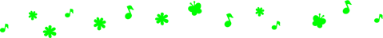

| まぼろしの星 | |
| 作 星 新一 & カバー絵 あらゐけいいち & 挿絵 片山若子 | |

まぼろしの星
星新一・作
あらゐけいいち・カバー絵
片山若子・挿絵


〈保護者のみなさんへ〉
本作品の全部または一部を無断で複製、転載、配信、送信したり、ホームページ上に転載することを禁止します。また、本作品の内容を無断で改変、改ざん等を行うことも禁止します。
本作品購入時にご承諾いただいた規約により、有償・無償にかかわらず本作品を第三者に譲渡することはできません。
本作品を示すサムネイルなどのイメージ画像は、再ダウンロード時に予告なく変更される場合があります。
本作品は縦書きでレイアウトされています。
また、ご覧になるリーディングシステムにより、表示の差が認められることがあります。
歌うハト
モリ・ノブオは少年だった。日曜日には犬のペロをつれて公園へやってくる。そこで午後をすごすのだった。
ふつうの子供なら、お父さんといっしょに遊ぶだろう。この公園にも親子連れの人が、たくさんきている。しかし、ノブオのお父さんは、半年ほど前から地球を留守にしているのだ。ガンマ星にある宇宙基地へ仕事で出かけ、あと三ヵ月ぐらいしないと帰ってこない。
お母さんも、一日じゅうノブオの遊び相手になってはくれない。しかたがないので、学校の休みの日には、ペロと公園へきてしまうのだ。
公園には、たくさんのハトがいる。ノブオはベンチに腰かけ、ぼんやりながめていた。
その時、どこからともなく、小さな歌声がした。人と話でもしていたら、聞きのがしてしまうところだ。
「ぼくはハトだよ、ハトポッポ、青いお空を飛んでゆく......」
だれが歌っているのかと、ノブオは、あたりを見まわした。しかし、近くには、それらしい人もいない。歌声は、ハトのむれのなかから聞こえてくるようだった。
「ハトが歌っているのかな......」
注意してよく見ると、ほんとうにそうだった。ほかのハトは、ポウポウとかクウクウとか鳴いているのだが、なかで一羽だけ、歌いながらそれにあわせて首を振っているのがいた。ノブオは驚き、あまりのふしぎさに声を出した。
「おい、ペロ。歌っているハトがいるぞ」
しかし、それは言わないほうがよかった。ペロは、むくむくした感じの小さな犬で、とてもかわいいのだが、すぐにほえたがるのだ。
ペロはハトのむれにむかって、勢いよくワンとほえた。ハトたちは、いっせいに飛び立ち、空に舞い上がってしまったのだ。そっと近づけば、つかまえることが、できたかもしれないのに。だが、ノブオは歌うハトから目をはなさなかった。そのハトは、ほかのにくらべ、飛び方もどこか変っている。
ずっと見つめていると、そのハトは一羽だけなかまから離れ、少しむこうにある高いビルの、三十階の窓のひとつに飛びこんでいった。これは、どういうことなのだろう。
「変だな、いまのハト。よし、なぞをつきとめてやろう」
ノブオはペロを連れて、そのビルへと歩いていった。ペロは小さいので、だいていれば受付けの人も文句をいわない。エレベーターに乗り、三十階でおりた。
ドアを数えながら、ろうかを歩く。外から見て、おぼえておいた窓の部屋は、はじから十番目だ。
胸がドキドキする。
「いいか、ペロ。ここで待っているんだぞ」
それからノブオはベルを押した。このなかへ入ると、あの歌うハトの秘密がわかるはずだ。まもなく、ドアがゆっくりと開いた。なんだかこわいような気もしたが、ここで帰るのもしゃくだ。部屋のなかは暗く、一歩入ると、変なにおいがした。
「ふしぎなところだなあ......」
ノブオがつぶやくと、うしろでドアが音をたててしまった。
ノブオがはっと思ったとたん、そこでは信じられないようなことが起こっていた。
あたりは宇宙だったのだ。たしかに、いまドアから部屋のなかへ入ったはずだ。しかし、理屈ぬきで、ここは宇宙のただなかなのだ。上も下もない、はてしない宇宙なのだ。どこを見ても、数えきれぬ星が、光っている。白、赤、青、さまざまに光っている。振りむいても、そこにはドアもない。やはり遠くまで星が散ってしまっている。そして、自分のからだは無重力となって、そのなかにポツンと浮いているのだ。
「なぜ、こんなことになったのだろう......」
ノブオは考えようとしたが、頭のなかがめちゃくちゃになったようで、さっぱりわからない。また、考えるひまもなかった。
その暗い宇宙のなかに、どこからともなく、銀色にぼんやりと光る変なものが現われたのだ。いつか水族館で見たクラゲのような感じだが、とても大きい。象ぐらいある。それが、ゆらゆらと動き、たくさんの足をふるわせながら、こっちへやってくる。ノブオは、逃げようとして手足を動かしてみたが、だめだった。地面の上ならかけだすこともできるのだが、無重力だと、そうもいかないのだ。
「ぼくはなにもしないよ、仲よくしよう」
呼びかけてみたが、相手には、通じない。おばけクラゲは、すぐそばまできた。ノブオは決心した。あくまで戦ってやろう。むざむざやられてたまるものか。さあ、こい......。
にらみつけていると、クラゲの足の一本がのびてきて、からだにさわった。べっとりとしてつめたく、ぞっとするようないやな感じだった。だが、ノブオはそれにかみついた。
しかし、相手は、たくさんの足を持っている。一本にかみついただけではこたえない。ほかの足も、つぎつぎとノブオにからみついてきた。
「やい、離せ」
もがいてもだめだし、ますます動けなくなる。ノブオは苦しがっているうちに、いつか気を失った......。
気がついてみると、ノブオは長椅子の上に横になっていた。そばで声がした。
「目がさめたようだね。どうだい、気分は......」
顔をあげてみると、そばには五十歳ぐらいの男がいた。髪の毛にちょっとしらがのある、学者のような感じの人だ。また、そのそばには二十歳ぐらいの女の人が立っていた。やはり頭のよさそうな人だ。ふたりとも宇宙で働く人の制服を着ている。部屋のなかには、机があり、椅子があり、壁にはコンピューターがあった。宇宙や怪物はどこにもいない。ノブオは起き上がって言った。
「ペロはどこです。ぼくのペロは......」
「ああ、犬のことね。心配ないわよ。ほら、ここにいるわよ」
女の人は床からペロをだきあげ、渡してくれた。たしかにペロだ。
「いったい、ここはどこなんです。ぼくはどうしたんですか」
こんどは男の人が答えてくれた。
「ここは、きみが入った部屋の、となりの部屋なんだよ」
窓の外を見ると、ハトのいた公園が下のほうに見えた。しかし、わからないことだらけだ。
「だけど、さっきドアを入ったら、そこには宇宙があったんですよ。ほんとうなんです。そこでクラゲのようなやつと戦って......」
「わかっているよ。さぞ驚いただろう。あれはみんな薬の作用だったのだよ。部屋の空気のなかに薬がまぜてあり、それを吸うと、すぐ無重力の宇宙にいる夢を見る。また、クラゲ怪物と戦う夢もだ......」
ノブオは、変なにおいを吸いこんだことを思い出した。あれが、その薬のにおいだったのか。そういえば、真空の宇宙で声を出せたのもふしぎだった。でも、びっくりしたなあ。
「だけど、なんでそんなことをしたのです。そうとわかっていれば、もっと楽しめたのに。それから、歌うハトは、なにか関係があるのですか」
なにもかも、ふしぎなことばかりだ。男の人はまじめな顔になって話しはじめた。
「わたしは、ガンマ星の基地の副所長のフジタです。ある事情で、基地で人をふやさなければならなくなった。しかし、宇宙はきびしいところだ。遊び半分の人間では、なんの役にも立たない。そこで、ひそかに試験をしてから採用する方針をたてた」
そのあと女の人が言った。
「ロボットのハトがそうなのよ。小さな声で歌うハトなの。それに気がつくかどうかで、注意ぶかさがわかる。気がついたとしても、自分の耳や目に自信のない人は、気のせいだろうと、そのままにする。そんな人は、みんな落第なのよ」
「ロボットのハトだったのですね」
「ええ。つぎに、ハトの行先をたしかめ、正体をつきとめようとする性質でないとだめ。でも、注意力と視力がよくないと、この部屋とまではわからない。だから、ここへやってくる人は、いままでほとんどなかったのよ」
「薬で宇宙の夢を見させるのは......」
「どんなことにもたちむかう勇気があるかどうかの試験なのよ」
ノブオは、からだをのりだして聞いた。
「それでぼくはどうなんですか。合格なのですか」
フジタ副所長は言った。
「合格だ。われわれがつくった問題に、すべてパスしたことになる。しかし......」
そして、困ったような顔になった。女の人が口を出した。
「あたしたちが期待していたのは、もっと年上の人だったのよ。あなたは、若すぎるわ。あ、まだ名前を言ってなかったわね。あたしは、ミキ・ユキエ。やはり、ガンマ基地の隊員なの」
若すぎると言われ、ノブオはがっかりした。だが、ガンマ基地の人とわかり、たずねてみた。
「じゃあ、ぼくのお父さんをご存知でしょう。ぼくはモリ・ノブオといいます。元気かどうか教えてください。このところ手紙がこないんです」
フジタ副所長は、ミキ隊員と顔を見合わせ、暗い表情になりながら言った。
「そうか、きみがモリ隊員のむすこさんだったのか。そうとは知らなかった。じつは話しにくいことなんだが、モリ隊員は、ある任務をおびて、基地を出発した。しかし、いまだになんの連絡もないのだよ。まだ、だめときまったわけではないのだが......」
ノブオは心のなかで、なにかが火のように燃えはじめた。空のかなた、どこかの星で、いまお父さんがさまよっているのだ。
「ぼくを宇宙で働かせてください。お父さんをさがす手伝いをしたいのです。なんでもやります。苦しくても文句は言いません」
ノブオの輝く目を見つめていたフジタ副所長は、うなずいて言った。
「よし、きみならやれそうだ。ほかの人とは意気ごみがちがう。しかし、宇宙は、決して安全なところではないのだよ。その覚悟だけは、してもらわなければならない」
「わかっています。いったい、ガンマ基地ではなにが起こっているのですか」
「くわしいことは、ガンマ星へ行く宇宙船のなかで話そう。原因不明の変なことが起こっているのだ。それを調べるために、何台もの宇宙船が基地を出発していったが、連絡を断ったきりのが半分だ。なかには帰ってきたものもあるが、その乗員たちは記憶を失っていて、報告にならない。きみのお父さんは、まだ帰ってこないほうだ」
「ぼくは、きっとやりとげてみせます」
フジタ副所長は、ノブオの家までついてきた。お母さんはノブオの熱心さに負け、宇宙へ行くのを許してくれた。
三日後、ノブオは空港から宇宙船に乗り、ガンマ星へと出発した。フジタ副所長も、ミキ隊員もいっしょだ。許可をもらってノブオはペロを連れてきた。
狂った計器
ノブオたちの乗った宇宙船がガンマ星へ近づくと、操縦士は望遠鏡で星座を調べ、いそがしそうにハンドルをまわした。ノブオはフジタ副所長に聞いた。
「宇宙船というものは、自動操縦で動くはずでしょう。これは旧式なのですか」
「いや、そこなんだよ、問題は。以前は自動操縦でよかったんだが、五ヵ月ほど前から、計器がみんなおかしくなった」
「なおせないんですか」
「なおしたくても、故障の原因がわからないのだ。そのため、計器まかせの自動操縦にしておくと、気がつかないあいだに、宇宙船はとんでもない方向に進んでいってしまう。だから、いちいち目で星を見て、手でハンドルを動かさなければならないのだよ」
「そうだったのですか」
ガンマ星の基地にある空港への着陸も、また大変だった。地上では何人もの人が、赤や青の旗を振って合図している。それに従って、宇宙船はゆっくりとおりる。計器が信用できないので、自動的にいかないのだ。
このガンマ星は、水もあり植物もあり、鉱物の資源もある。だから、その開発でさぞ活気にあふれていることだろうと、ノブオは考えていた。だが、着陸して見まわしてみると、それほどでもない。働いている人が、あまりいないのだ。宇宙船から出て、ドーム状の本部の建物へむかう途中、ノブオはミキ・ユキエ隊員に聞いてみた。
「なんだかさびしい感じですね。みんな、どうしてしまったのですか」
「これも計器のぐあいがおかしくなったためなのよ。基地の計器はみんな狂っているの。知らないまに健康診断器のメーターまで変になっていて、健康な人たちをみんな病気と診断しちゃったの。それをなおそうとして、薬をどんどん飲ませたので、多くの人がほんとうの病気になってしまったのよ」
本部の部屋のなかには、ベッドが並べられ、基地の人たちが横になっていた。また、なんとか働いている人も元気がない。計器が使えず、なんでも目と手でやらなければならないため、注意のしつづけで疲れきっているのだ。
「驚いたなあ。もし、こんなことが地球で起こったら......」
と、ノブオは言った。地球上の計器がみんな狂いはじめたら、大変なさわぎになる。工場も交通もすべて止まってしまうのだ。フジタ副所長は大きくうなずいた。
「そうなんだ。基地の隊員は訓練されているため、まだ大事故も死者も出ていないが、仕事は完全にストップだ。だから、少しでも早く、その原因をつきとめなければならないのだ」
「手がかりはないのですか」
「特殊な電波のためと考えられるが、それ以上のことはわからない。その電波が、どこからくるのかもわからないのだ。調べようにも、第一、計器がたよりにならないし......」
副所長はため息をついた。ノブオは、思いついたことを言った。
「自動操縦にまかせて飛ぶと、宇宙船が変な方向へ進んでしまうというのでしょう。それなら、こうしてみたらどうでしょう。その狂った計器にまかせて、そのまま宇宙船を進めてみたら。どこかへ行きつくでしょうし、そこでこんなことになった原因が見つかるんじゃないでしょうか」
「ノブオくんもそう思うか。じつは、そのために、すでに八台の調査宇宙船を出発させている。しかし、まだ成果をあげていないのだ。そのうちの四台は不安そうなようすで帰ってきて、報告はどうもはっきりしない。かんじんの記憶を失っているのだ。あとの四台はなんの連絡もない」
「ぼくのお父さんは、まだ戻らないほうなのですね」
ノブオはそれが心配だった。副所長は感情を押えた声で言った。
「そうだ。しかし、ほかに方法も思いつかない。そのため、九台目の宇宙船を出発させる。わたしが行きたいところだが、所長も病気になり、それもできない。ミキ隊員が行く。このように危険な任務だが、ノブオくんもいっしょに行くかね」
「行きますとも」
ノブオは、はっきり答えた。
ガンマ星の見物などしているひまはなかった。準備が進められ、二日後に出発となった。宇宙船の名はガンマ九号。乗っているのは、ミキ隊員とノブオと犬のペロ。
冒険への覚悟はしているが、ノブオはまだ少年。心のなかでは、不安だった。原因もわからずに狂っている計器にまかせて、自動操縦で宇宙に進むのだ。どこへ行くことになるのだろう。そこには、なにが待ちかまえているのだろう。
黄色い花
あてのない旅が、何日かつづいた。突然ミキ隊員が言った。
「ノブオくん。前のほうに星が一つ見えてきたわ」
望遠鏡でのぞくと、灰色の岩ばかりの星だった。そこに着陸してみることにした。
ふたりは宇宙服をつけて、外へ出た。なんの物音もせず、目につくものといえば、ところどころに咲いている黄色い草花ぐらいだ。まわりが殺風景なためか、花が美しく見える。
「この星にあるのは、花だけのようね」
ミキ隊員は、それをつんで花束を作った。ノブオは、肩にかけたカメラで、あたりをうつしていたが、そのうち言った。
「あ、むこうの岩山に穴があります。行ってのぞいてみましょう」
花ぐらいしかない星の岩山に、なぜ穴などがあるのだろう。ふしぎがりながら近づくと、穴の奥の暗やみで、なにかが動き、外へ現われた。
大きなヘビだ。直径が一メートルぐらいあり、とても長い。からだは銀色をしていて、赤い点がもようのようについていて、目はみどり色に光っている。気持ちの悪いヘビだ。
「わあ、出た。大変だ」
ノブオは叫び、腰の光線銃を手にしてうった。しかし、使い方になれていないので命中しない。ヘビは、こっちへむかってくる。
ミキ隊員は、さすがに落ちついていた。ねらいは正しく、光線はヘビに命中した。しかし、相手はびくともしない。きっと岩を食べているヘビなので、熱に強いのだろう。ノブオは足がふるえ、歩けなくなった。泣こうとしたとき、ミキ隊員の声が聞こえた。
「ノブオくん、早く宇宙船へ戻るのよ。ヘビの動きはにぶいから、大丈夫よ」
そのとおりだった。大ヘビは、こっちへむかってくるが、ゆっくりなのだ。こっちのほうが早い。ノブオは逃げながら、カメラのシャッターを押すこともできた。
ふたりはガンマ九号へ戻り、急いで飛び立った。ほっとして宇宙服をぬぐ。
「けっきょく、おみやげは、この花束だけというわけね」
ミキ隊員は、花を机にかざった。それから、宇宙船で星のまわりを飛んだ。上空からくわしく調べようというのだ。
ミキ隊員は、窓から外をながめていたが、そのうち下を指さして言った。
「ノブオくん、この灰色の星へ着陸してみましょうよ」
この星とは、いま飛び立ったばかりの星のことだ。だが、ノブオは少しもふしぎそうな顔をせず、すぐ賛成した。
「ええ、そうしましょう」
これは、どういうことなのだろう。もし、だれかがそばで見ていたら、きっと目を丸くしたにちがいない。さっき着陸し、大ヘビに出会い、逃げて飛び立った星に、もう一回おりようというのだから。しかし、ふたりは、それを少しもおぼえていないのだ。だから、はじめての星のつもりで、宇宙船の高度を下げてゆく。
ふたりに、こんなことが起こった原因は、星でつんできた黄色い花だった。そのにおいのなかに、星の上で、見たり、行なったりしたことの記憶を失わせる成分がふくまれている。
宇宙船は、やがて着陸するだろう。ミキ隊員とノブオとは、宇宙服をつけて外へ出ることになる。そして、花をつむだろう。それから大きなヘビに追いかけられ、あわてて逃げまわり、宇宙船で飛び立つことになる。
だが、ほっとして宇宙服をぬいだとたん、つんできた花のにおいをかぎ、それらのことをすっかり忘れてしまうのだ。振り出しに戻って、また同じことをくりかえす。いつまでたっても、この星から離れられないことになる。目に見えぬワナにかかったようなものだ。
しかし、その時、犬のペロが大声でほえはじめた。
「どうしたんだい、ペロ......」
ノブオが声をかけたが、ペロはカメラにむかってほえつづける。顔をなでてやっても静かにならない。ミキ隊員は首をかしげた。
「変ねえ。なぜカメラにほえるのかしら。着陸する前にそのフィルムを現像してみましょうよ」
フィルムには、星へおりて花をつんでいるミキ隊員の姿がうつっている。
「あら、あたしがうつっているわ。なぜでしょう」
「それに、こんな大きな、気持ちの悪いヘビも......」
ふたりはぞっとした。自分のカメラに、見たこともないものが、うつっているのだ。
ミキ隊員とノブオとは、長いあいだ考え、話し合った。そのうち、机の上に枯れかけている花のあるのをみつけた。そして、やっと花のにおいのせいにちがいないと知った。ミキ隊員は、言った。
「この花が原因だったのね。基地に戻った隊員たちが、だれもはっきりした報告をせず、わけもわからずに不安そうなようすだったのは」
「きっと、そうですよ」
「同じことを、何回もくりかえしてしまう。しかし、大ヘビに追いかけられたショックは心の底に残り、記憶していなくても、こわい気持ちだけが高まる。最後には、たまらなくなって、ガンマ基地へ逃げ帰るのよ」
そんな目に会ったら、さぞいやなことだろう。こわい目に会うのだが、すぐそれを忘れ、また同じようにこわい目に会うのだ。燃料はへり、宇宙船のなかに枯れた花がふえてゆくが、なぜそうなるのかもわからないのだ。
「ぼくたちが早く気がついたのは、ペロのおかげですよ。犬には花のにおいがきかないのでしょう。おまえにも、いいところがあるよ。宇宙に出てから急に利口になったみたいだね」
ノブオは、ペロをだきあげた。ペロがほえてくれなかったら、どうなっていただろう。そして、気になるのはお父さんのことだ。
「この星から基地へ引きかえさなかった調査宇宙船は、どうなったのでしょう......」
「途中で気がついたか、この星を上空からながめて、なにもなさそうだと着陸せずに進んでいったかでしょう。さあ、あたしたちも、もっと先をめざしましょう」
だれかいませんか
ノブオとミキ隊員とペロの乗った宇宙船ガンマ九号は、人の頭をおかしくしてしまう星をあとにして、宇宙を飛びつづけた。しかし、目的地がきまっているのではない。原因もわからずに狂った計器によって、どことも知れぬ方角にみちびかれているのだ。
「ノブオくん、こわい......」
と、ミキ隊員に聞かれ、ノブオは首を振って答えた。
「こわくなんかありませんよ」
ほんとうのところは、ゆくてになにが待ちかまえているか、それを考えると、ときどきおそろしくなるが、女の人の前で、そんなことは言えないのだ。また、どんなことをしても、お父さんをさがさなければならない。
何日か飛びつづけると、やがて一つの惑星が見えてきた。住みよい星のようだ。
「こんどは、あの星に着陸してみましょう。気候もよさそうだし、植物もありそうです」
と、ノブオが言ったが、ミキ隊員は答えた。
「ええ、だけど注意しましょう。こういう住みよい星には住民がいるでしょうし、突然着陸したりすると、驚いて攻撃してくるのよ」
そういうものかもしれないなと、ノブオは思った。ガンマ九号は上空に浮かび、ゆっくりと高度を下げていった。攻撃されたら、すぐに逃げられるように注意したのだ。
望遠鏡でのぞいていると、道路が見えてきた。ところどころに小さな町がある。文明をもつ住民がいるようだ。だが、地上からはなんの攻撃もない。
「この星の人たちは、平和的なようですね」
と、ノブオが言うと、ミキ隊員はうなずいた。
宇宙船は、さらに高度を下げ、ある町のそばの原っぱに着陸した。
「おおい、だれかいませんか。ぼくたちは、地球という星からやってきた者です。みなさん、仲よくしましょう......」
ガンマ九号から出て、ノブオは、スピーカーを使って大声で呼びかけた。しかし、あたりはしんとしていて、なんの返事もない。住民は攻撃もしてこないが、歓迎もしてくれないようだ。それとも耳が聞こえないのだろうか。
「町へ入ってみましょう。なにが起こるかわからないから、武器を持っていくのよ」
と、ミキ隊員が言った。そのあとにつづきながら、ノブオはペロに命じた。
「だれかいたら、ほえて知らせるんだぞ」
町に近づいたが、だれも現われず、ペロもほえなかった。小さい町で、地球の町によく似ていた。道路をはさんで歩道があり、商店や住宅が並んでいた。
しかし、動くものは一つもなく、人の声はもちろん、なんの物音も、聞こえてこない。ノブオは、言った。
「うすきみ悪いところですね。住んでいる人は、どこかにかくれているのでしょうか」
どの家もきちんとしていて、見捨られた古い町という感じはしない。それなのに住民の姿が見えないのだ。
その時、ふいにペロがほえて、かけだしていった。そして、庭のある一軒の住宅のなかへと入っていった。
ふたりは、はっとなって、光線銃をにぎった。玄関に立って、あいさつをする。
「こんにちは、だれかいますか」
やはり返事がない。ドアを押すと開いた。なかへ一歩入り、ミキ隊員もノブオも、そこにあるものを見て驚いた。
テーブルがあり、その上には四人前の食事が並んでいる。しかも、できたてらしく、まだあたたかい。いいにおいもする。
だれも住んでいないらしい家に、できたてのごちそうがある。こんなことがあっていいのだろうか。ふたりはしばらく、立ち止まってぼんやりとため息をついた。
そのあいだに、ペロは机の上へ飛び上がり、皿の上の食事を食べはじめていた。ノブオは気がついて言った。
「おい、ペロ、食べちゃだめだ。毒が入っているかもしれないんだ」
なにかのワナかもしれない。ネズミとりのように、エサにつられて入ると、出られなくなってしまうということだって考えられる。
しかし、玄関のドアから外へ出ることもできた。また、料理を食べたペロはなんともない。ミキ隊員は小さな装置を出して調べたが、有害なものは、入っていなかった。
「大丈夫のようよ。勇気を出して食べてみましょうよ」
ミキ隊員とノブオは口に入れた。味はよかったが、なぞは少しもとけない。ふたりは、なぜこうなったのだろうと、原因を考えてみた。
宇宙船がおりてくるのを見て、住民たちがあわてて逃げたのだろうか。しかし、あたりのようすでは、そうとも思えない。椅子がひっくりかえってもいなければ、品物が散らかってもいないのだ。
では、どこかへかくれているのだろうか。それなら、ペロがほえてみつけるはずだ。
「マリー・セレスト号事件のようね......」
と、ミキ隊員が言った。むかしの地球で起こった奇妙な事件のことだ。この名前の船が大洋をただよっているのを発見したところ、内部は、なにもかもととのっており、故障もしていない。書きかけの日記もあり、少し前まで人がいた感じなのだが、さがしても、だれひとりみつからなかったという、なぞの事件だ。
「でも、こんな食事があるからには、それを作っただれかがいるはずです。別の町を調べに行きましょう」
ノブオが言うと、ミキ隊員が答えた。
「そうしましょう。宇宙船から小型エアカーを出して、それに乗って行きましょう」
エアカーとは、空気を下に噴射しながら走る車で、道路の上をすごい早さで進むのだ。
道路は湖のそばを通ったり、森をぬけたり、花の咲いている野原を走ったりした。
ときどき町を通りすぎるたびに、エアカーのスピードを落し「だれかいませんか」と叫んでみる。しかし、なんの返事もなく、どの町もからっぽだった。
人の姿は、まったくないのだが、どの家も掃除がゆきとどいて、水道からはちゃんと水が出る。住民たちは、どうしたのだろう。いっせいに、消えてしまったのだろうか。それとも、透明人間の町なのだろうか。
あまりのふしぎさに、ノブオはこわくなって、悲鳴をあげた。しかし、それを聞きつけて出てくる者もないのだった。
こうして、いくつもの町を通りすぎた。ノブオは、いちいち呼びかける気もしなくなった。そして、何番目かの町に近づいたとき、ペロが、突然ほえはじめた。
「また食べ物かな。ペロ、だれか人がいるというのかい」
ノブオが聞くと、そうだと答えるように、ペロはほえつづけた。
「わかった、静かにするんだ」
ふたりはエアカーを止めて、おりた。光線銃をにぎって、そっと進む。人声がする。どんなやつがいるのだろう。地球人の声のようだが、油断はできない。
声は、レストランのような店のなかから聞こえてくる。大ぜいいるようだ。ミキ隊員とノブオとは、武器をかまえてうなずきあい、飛びこんだ。しかし、なかからはなんの反撃もなかった。
そのかわり、酔っぱらいの声がした。
「おい、いい気持ちでいるところだ。おどかさないでくれ」とか「よくきた。さあ、新しくきた人たちに乾杯しよう」とか、六人ぐらいの男が、酒を飲みながら、わあわあさわいでいる。歌を歌っている者もある。
ふたりは、あまりのことに驚いた。ミキ隊員は、目を丸くして、男たちの顔をながめていたが、やがて言った。
「まあ、あなたたちだったのね。こんなところで酔っぱらったりしていて......」
ノブオは、ミキ隊員に聞いた。
「この人たちを知っているのですか。いったい、だれなんです」
そして、わけがわかった。この人たちは、ガンマ星の基地の人たちだったのだ。計器が狂うという異変の原因を調べるために、基地を出発した宇宙船。そのうちの二台が、ここで道草をくっている。そのまま連絡がないので、基地では心配しているというのに、このありさまだった。
酔っぱらいのひとりが言った。
「まあ、うるさいことなど忘れて、ミキ隊員もいっしょに飲もうよ。おいしいお酒がそろっている」
ふたりは、それをなだめながら、質問をし、少しずつ事情が、わかってきた。この星では、どの町の家も精巧な自動装置がしかけられているのだ。
よごれると、自動掃除器が現われて、きれいにしてくれる。食事の時間になると、料理がひとりでに壁から出て、机の上に並べられるのだ。
さっきの、だれもいない家にあった食事のなぞも、それではっきりした。となると、この星には地球に似た文明、しかも、かなり進んだ文明があったのだ。しかし、その住民たちは、どうなったのだろう。
前に到着した隊員たちも、みな、そのわけを知りたがった。だが、手がかりになる記録は発見できず、町の家を調べてもわからない。
そのうちに、隊員たちは、あまりいごこちがいいので、気がゆるんでしまったのだ。静かで気候がよく、働かなくていい。ちょっと、ひと休みのつもりが、もう一日、もう一日となって、酒を飲んで酔っぱらいつづけるという生活になってしまった。
おいしい食べ物も酒も、なんでも自動的に出てくるのだ。歌ったり、遊んだり、好きな時に眠ればいい。
こんな生活をつづけたので、隊員たちは、みんな頭がぼけてしまっていた。ミキ隊員とノブオとが、これだけ聞き出すのも大変だった。ノブオは、ひとりひとりに聞いてまわった。
「ぼくのお父さんの、モリ隊員のことを知りませんか。みなさんのように、ガンマ星の基地を出発したはずなんです」
しかし、知っている人はいなかった。きっと、さらに先へ進んでいったのだろう。ノブオは、お父さんに会えなくて、がっかりしたが、ほっとした気分でもあった。お父さんが、ここでだらしなく酔っぱらったりしていたら、もっとがっかりしてしまったにちがいない。
ミキ隊員とノブオは、エアカーに乗って宇宙船へ戻り、無電で、このことを報告した。基地のフジタ副所長は、あまりのことに、あきれたり、怒ったりしたが、いまさらどうしようもない。命令をミキ隊員に伝えた。
「わかった。きみたちは、そのまま先へ進んでくれ。酔っぱらっている隊員たちについては、こちらから迎えの宇宙船を出す」
「わかりました。しかし、この星から住民のいなくなった原因は、まだなぞです」
「それについては、もっと先へ進まなければわからないだろう。すぐ出発してくれ」
ミキ隊員とノブオとは、それに従った。ここで、もうしばらく休みたいが、そうしたら、ずるずると、ほかの連中と同じになってしまうだろう。任務を、忘れてはいけない。ふたりは、ガンマ九号を出発させた。
ペロが......
宇宙船ガンマ九号は、どこへともなく飛びつづけている。どうなっているのかわからない計器にまかせ、進んでいるのだ。ちょうど、目かくしをされ、だれともわからない人に手を引かれて、歩きつづけているようなものなのだ。
犬のペロは、のんびりと眠っているが、ノブオは、ときどき、たまらなく心配になる。そこで、ミキ隊員に話しかけてしまうのだった。
「ぼくたちが飛び立った、あの、人の住んでない町ばかりの星。住民たちはどうしてしまったのでしょう」
「わからないわ。宇宙のなぞというものは、そう簡単にはとけないのよ。注意ぶかくとりくんで、少しずつわかってくるものなのよ」
「いったい、ぼくたち、どこへ進んでいるんでしょうね」
「それを調べるのが、あたしたちの任務じゃないの」
何日か宇宙の旅がつづいた。
宇宙船内の無電機が、
〈ピーッ、ピーッ〉
という音を、かすかに受信しはじめた。それを耳にして、ミキ隊員が言った。
「あら、救助信号よ。さっそく、その方向にむかいましょう」
「でも、この宇宙船の計器は、正常じゃないんでしょう。電波を受けないで、勝手に鳴ってるんじゃないんですか」
ノブオの質問に、ミキ隊員は、はっきり答えた。
「行ってみても、だれもいないのかもしれない。また、なにかのワナかもしれないけど、宇宙で働く者としては、救助信号を聞いたからには、なにをおいても、すぐそこにむかう。これがきまりなのよ」
ミキ隊員は、操縦席について、その方向へとガンマ九号を進めた。やがて、星が見えてきた。空にただよう白い雲をつきぬけ、地上へむかう。
そして着陸。地上は、草におおわれた小高い丘が、いくつもつづき、ところどころに林がある。気温はあたたかい。
「おだやかなながめですね。発信している人、どんな目に会って、救助を求めることになったのでしょう」
ノブオはふしぎがった。
「外へ出て調べてみましょう。電波探知機によると、信号は、あっちのほうからよ」
ふたりは、外へ出た。ペロもついてきた。ペロは宇宙の旅にあきたのか、喜んでかけまわった。
丘をいくつか越えて進むと、なにか物音がした。重い物が動くような、どしん、どしんという地ひびきもする。
その音は、しだいに大きくなり、丘のむこうから、それは、突然姿を現わした。大きな大きな動物だった。むかしの地球にいたという、恐竜のようだ。首が長く、尾も長く、高さは二十メートル以上もありそうだ。ノブオが叫ぶ。
「わあ、出た......」
「光線銃をうつのよ。そして逃げるのよ」
ノブオは、引き金を引いた。しかし、光線は出なかった。ミキ隊員のも、やはり同じだ。
「どうしたのかしら。銃をさびさせる成分が、大気中にふくまれているのかもしれないわ。さあ、早く宇宙船へ逃げましょう」
ふたりはかけだした。恐竜は、あとを追ってくる。すばやい動きではないが、からだが大きいので、歩くはばがひろい。
ふたりとの距離はちぢまる一方だ。ふたりはくたびれてくる。
「ぼく、もうだめだ。走れない」
「なんでもいいから、走るのよ。つかまったらおしまいよ！」
しかし、ノブオは、力がつきてしまった。恐竜はすぐそばまで追いついてきた。こんなに大きいのが相手では、飛びかかっていっても、はねかえされるだけだ。そして、ふみつぶされるのだろうか。食べられてしまうのだろうか......。
その時、いっしょに走っていたペロが、勢いよくほえながら、別な方角にかけだした。恐竜は、その鳴き声に興味をもったらしく、ペロのあとを追いはじめた。
「あ、ペロがやられちゃう......」
ノブオは、疲れも忘れて言った。だが、ミキ隊員は冷静に言う。
「さあ、このすきに逃げましょう。あたしたちには任務があるのよ。それを忘れちゃだめよ」
立ち止まろうとするノブオを、ミキ隊員は強く引っぱった。やっと宇宙船へ戻る。このなかなら、恐竜にやられることはない。
ほっとしたとたん、ノブオは泣きだした。
「ペロがいなくなっちゃった。いまごろはもう、恐竜に追いつかれ、食べられちゃっている。いつまでも逃げきれるはずはない」
それをミキ隊員はなぐさめた。
「あたしだって悲しいわ。だけど、ペロはあたしたちを助けようとして、犠牲になってくれたのよ。もしペロがああしてくれなかったら、みんなやられてしまっていたわ。これからは、ペロのぶんまでがんばりましょうね」
「はい......」
うなずいたが、ノブオの悲しみは、そうすぐに消えない。夜になって眠ると、ペロの夢を見た。仲よくふざけあっている夢だ。
だが、ふと目をさますと、もうそのペロとは会えないことに気づく。さびしさはさらにはげしくなり、ノブオは胸が痛くなるのだった。
朝になると、ミキ隊員は言った。
「ここの恐竜には弱ったわね。光線銃の修理には、時間がかかるし、眠りガス弾でも持って行きましょうか。救助信号を出している人のところに、早くたどりつかなくては......」
ペロのことにはふれなかった。それを口にすると、ノブオが悲しむからだ。
「あんなに大きな恐竜です。眠りガス弾も、よほど、たくさん使わなければ、きかないかもしれませんよ。それより、逃げる時に油をまいて、すべってころばせる作戦はどうでしょう」
と、ノブオは意見を言った。ここは地球ではなく、きびしい宇宙なのだ。ペロのことをいつまでも悲しんで、任務をおこたることは許されない。宇宙船の受信機は、ピーピー鳴りつづけている。救助を求めている人間が、この近くで待っているのだ。
また、基地の人たちの大ぜいが、いま、異変で困っているのだ。その解決のために、ぼくたちは、出発してきたのだ。
そう考えて、ノブオは元気を出そうとした。しかし、ペロがすぐそばにいるような気がして、あたりを見まわしてしまう。そして、声がつまり、しぜんに涙が出てきてしまうのだ。
突然、ノブオが叫んだ。
「あ、ペロの声がする」
ミキ隊員がきびしい口調で言った。
「気のせいよ。ペロのことは、もう忘れなさい」
「ほんとですよ。聞いてごらんなさい」
耳をすますと、遠くでたしかにペロのほえる声がしていた。ノブオは宇宙船を出てかけだした。
「お待ちなさい......」
と、呼ぶミキ隊員の声も耳に入らない。丘を二つほど越えると、むこうからペロがかけてきて、ノブオにとびつく。ノブオはだきしめ、頭をなでながら言った。
「よかった。ぼく、どんなに悲しんだかしれないぞ、こいつめ......」
泣いたり、笑ったりしていたので、ノブオはあたりに注意するのを忘れていた。地ひびきに気がついた時には、もうおそい。
すぐそばの丘のかげから、恐竜が姿を現わしていた。あまり、突然だったので、ノブオは足が、すくんでしまった。
ああ、ぼくはやっぱり子供なんだ。すぐに大切な任務を忘れてしまう。ミキ隊員の命令を聞かなかったのがいけないんだ。
こんどはペロも、なぜかほえてくれない。
恐竜は、すぐそばまできた。ノブオは、ふるえながら目をつぶった。もう助からない。お父さん、お母さん......。
しかし、なかなか、かみつかれも、ふみつぶされもしなかった。長い長い時間がたったような気がした。そのうち、顔になにかがさわるのを感じた。おそるおそる目をあけると、そこに恐竜の顔があった。
恐竜にほおずりされるというのは、変な気持ちだ。生きたここちがしなかったが、やがて落ちついてくると、恐竜は意外にやさしい目つきをしていた。こっちをやっつけようとしているのではないらしい。それどころか、なれなれしいような感じさえした。おとなしいやつだったんだ。
ノブオがペロをだき、恐竜をあとに連れて戻ってきたのを見て、ミキ隊員は目を丸くした。
「信じられないわ。どういうことなの、これ......」
ノブオは、この恐竜は、どうやら危険な存在でないらしいことを説明した。ミキ隊員は安心した。ゆっくり外を歩けるとわかったからだ。
「じゃあ、出かけましょうか。この小型探知機を持って進みましょう」
宇宙船を出発すると、恐竜はあとについてくる。その背中にペロがかけあがったりするが、恐竜は別に怒らない。途中で何頭かの恐竜に出会った。どれもおとなしく、歓迎のつもりか、しっぽを振るのもあった。
探知機の示す方向に進むと、やがて丘の途中に、ほら穴をみつけた。救助信号は、そのなかから発信されているのだとわかった。
注意しながら入ってみると、ひとりの隊員が、眠っていた。そのそばには、スイッチの入った救助信号用の小型無電機があった。
ミキ隊員は、ひと目見て、それがふつうの眠りでなく、冬眠剤を飲んだ眠りとわかった。そこで、ポケットから薬を出し、注射する。めざめさせる薬なのだ。
まもなく、眠っている隊員の呼吸は大きくなり、やがて目を開き、あたりを見まわしながら言った。
「あ、ぼくは助かったんですね。どうもありがとう。ぼくはツジ隊員です」
「あたし、ガンマ基地からきたミキ隊員。でも、こんなところでどうなさったの」
「調査のために、この星におりてみたのです。しかし、外へ出て、しばらく進むと、恐竜に追いかけられた。銃は故障で使えない。宇宙船と反対のほうにかけだしてしまいました。やっとこの穴にかくれたのですが、外には恐竜がいて、出られない。しかたがないので、冬眠剤を飲んで救助を待つことにしたわけです」
食べ物なしで何ヵ月もすごすのには、からだを動かさずに眠りつづけるのがいちばんいいのだ。
「ぼく、モリ・ノブオです」
と、ノブオはあいさつした。それから、ここの恐竜はおとなしい性質であることを説明した。ツジ隊員は、とてもくやしそうだった。知らなかったばっかりに、この穴のなかで、長いあいだ眠ることになってしまったのだから。
ツジ隊員は、ミキ隊員と、いままでのことを報告しあったあと、自分の宇宙船のほうへ戻っていった。冬眠からさめた人は、しばらくたたないと、ふつうのからだに戻らないのだ。そのためツジ隊員は、何日か休んで、あとから出発することになった。
ノブオたちのガンマ九号は、ひとあしさきに出発し、また宇宙の旅をつづけた。ノブオは言う。
「あの恐竜たち、いやになれなれしかったなあ。地球へ連れて帰りたい感じでしたね」
「どうして、あんなにおとなしい性質になったのかは、いずれなぞもとけるでしょう。でも、ぶじにあの星を出られてよかったわね」
「なにもかも、ペロのおかげですよ。おい、ペロ。おまえはぼくたちを助けるために、あんなことをしてくれたのかい。それとも、おとなしい恐竜とわかってやったのかい」
ペロは、わんわんとほえた。どっちなのか、ノブオにはわからなかった。しかし、そんなことはもう、どっちでもいいのだ。ぼくは助かったのだし、ペロとも別れないですんだのだ。
ただよう城
おとなしい恐竜のいる星をあとにした宇宙船ガンマ九号は、さらに旅をつづけた。窓から外を見ると、数えきれぬ星々が、さまざまな色で輝いている。
「お父さんは、いまごろ、どの星に......」
ノブオがつぶやくと、ミキ隊員はなぐさめた。
「きっと、どこかで元気に活躍していらっしゃるわよ。心配するだけでは、なにも解決しないわ。勇気を出して進みつづけるのよ。さあ、光線銃の手入れでもしましょう」
ふたりはさびた光線銃をなおした。
何日かがすぎた。ふいに、操縦装置のベルが鳴りはじめた。ノブオは質問した。
「あれは、なんのベルなんですか......」
「前方になにか物体があると、レーダーがとらえて、ベルで知らせてくれるのよ」
「でも、計器の状態が怪しいんだから、あまりあてにはできませんね」
「だけど、いちおう調べてみましょう。どうせ、なにかあったとしても隕石のたぐいでしょうけど......」
ふたりは宇宙船の前のほうの窓から、外を見た。ガンマ九号は速力をゆるめ、ライトで照らしながら進んだ。やがてライトの光のなかに、想像もしなかったものが出現した。
「あ、あれはいったい......」
ノブオは悪い夢にうなされたように叫び、ミキ隊員も目を丸くして言った。
「悪魔のすみかみたいね」
ヨーロッパの古い城のようなものが、そこに浮いていた。まわりは石垣で、ところどころに見張り台がある。円筒形で先のとがった塔のような建物がいくつもある。その塔の上には、旗がついていた。まっ黒のなかに、ぐにゃぐにゃしたひとだまのような形が、白くかかれている旗だ。真空の宇宙で風がないため、旗は少しもひるがえらない。見ただけで、うすきみ悪くなる。それが宇宙のただなかをただよっているのだ。
「なぜ、こんなお城が、こんなとこに......」
「わからないわ」
「だれが作ったんでしょう」
「わからないわ」
なにもかもなぞだった。ミキ隊員は無電機を使って呼びかけてみた。しかし、なんの返事もない。
ガンマ九号がさらに近づくと、城の窓にいっせいにあかりがともった。なかにいるだれかが、宇宙船を見てあかりをつけたのだろうか。だが、どの窓にも人影はなく、あいかわらず無電への返事もない。ノブオは言った。
「なんだかこわいな。でも、調べに入らなくてはならないんでしょう」
「ええ、ここで逃げては、あたしたち、なんのためにきたのか、わからなくなってしまうわ。さあ、入り口をさがしてみましょう」
ガンマ九号が石垣にそってまわると門があった。丈夫そうなとびらがついていたが、近づくにつれてしぜんに開いた。追いかえそうという感じではなかった。
思いきってそこを通りぬけると、とびらはふたたびしまり、そこには宇宙船を置くのにちょうどいい広さの場所があった。
あたりには空気もある。天井や壁には古びたランプがあり、青みをおびた光が、そのへんを照している。空気が有害でないことをたしかめ、ふたりは外へ出て大声で呼んだ。
「おおい...」
しかし、声は石の壁にはねかえって、こだまとなるばかり。
動くものは、なにも現われなかった。城のあかりは、宇宙船が近づいたので、自動的についたのだろうか。
「だれもいないようですね」
「さあ、その部屋に入ってみましょう」
ミキ隊員は、そばのドアを指さした。
ドアをあけると、きしむような音がした。なかに入ってみると、だれもいない、かすかにかびくさい部屋だった。部屋のなかには、テーブルと椅子がいくつかあるだけだ。青いランプが上のほうで光っている。ドアがうしろで、しぜんにしまった。
ぶきみな感じだが、ついてきたペロは、あたりを楽しげにかけまわっている。
「ここ、なんのための部屋なんでしょう」
「わからないわ」
ふたりは椅子にかけてみたり、歩きまわったりしてみた。しかし、城の正体を知るてがかりは、なにも発見できなかった。
そのうち、ノブオはなにか変な気分になってきた。
さっきまでは、簡単にテーブルに手をつくことができたのに、背のびをしないと、そうできなくなったのだ。
「変だなあ、どうしたんだろう？」
ミキ隊員も首をかしげながら言った。
「あたしもそれに気がついたの。さっき椅子に腰かけた時は、ちょうどよかったんだけど、いますわると、椅子が大きすぎるのよ」
ノブオはぞっとし、ふるえ声を出した。
「大変だ。ぼくたちのからだが、ちぢみはじめたんだ。ちぢんでいくんだ」
「おそろしいところへ入ってしまったわ。早くここから出ましょう」
ふたりはペロをつれ、ドアにむかった。しかし、たどりついた時には、さっきはさわることのできたとってに、背のびをしても手がとどかなくなっていた。
ドアをあけることができないのだ。押しても、光線銃でうっても、びくともしない。
「そうだ、椅子を台にして、とってをまわしましょう」
ノブオは椅子を取りに戻った。しかし、ノブオの背の高さは、もう椅子のすわるところぐらいになっていた。力をこめても重くて動かせない。泣き声をあげてしまった。
「だめだ。ぼく、もうこんなに小さくなってしまった」
「あきらめないで、がんばりましょう」
ミキ隊員は元気づけたが、いい方法も考えもなかった。部屋を歩いてひとまわりするのにも、さっきの何倍も時間がかかる。もはや、この部屋から出られそうにない。
悪魔ののろいで小さくされつづけ、ついには消されてしまうのだろうか。
そう考えると、ノブオは気が狂いそうだった。
ノブオがしゃがみこんでぐったりしていると、突然ミキ隊員が言った。
「あら、からだがもとに戻りはじめたようよ」
「ほんとですか......」
ノブオが起き上がると、そのとおりだった。
立ってみると、椅子にとどくまでになっており、やがて、机の上から見おろせるようになった。もとの大きさになれたのだ。
ドアのとってをまわすこともでき、あけて部屋の外へ出る。
「ああ、助かった。ぼく、どうなることかと......」
ノブオは、ほっとため息をついた。しかし、ミキ隊員は考えながら言った。
「キツネにつままれたようで、ますますわけがわからなくなったわ。なぜ、またもとへ戻れたんでしょう。あたし、もう一回、部屋のなかをよく調べてみるわ」
「ぼくはここで待っていますよ。まだ、からだがふるえている。合図をしてくれれば、外からドアをあけてあげますよ」
ノブオはペロを出して、そばにあった石づくりの椅子に腰をおろした。
いまのさわぎで、ノブオの頭はすっかり疲れてしまった。目をつぶると、少し眠くなってきた。そのうち、ノブオはどこからか聞こえる、足音のようなものを耳にした。そして、はっと思った。
ここは、だれもいないお城なのだ。それなのに足音がするとは......。
目をあけて見まわすと、むこうの暗い階段を、なにかがおりてくる。
「だれですか」
声をかけたが、そいつはだまって階段をおりつづけ、近づいてくる。明るいところへきて、顔がはっきり見えた。
「き、きみは......」
ノブオは叫び声をあげた。むこうからやってきたのは、やはりノブオだったのだ。服も同じだし、ペロをだいているところも同じだった。自分とそっくりなのだ。鏡にむかっているような気分だ。こんなことって、あるだろうか。
幽霊ではない。近づくにつれ足音はするし、上からの光で床にはからだの影がうつっている。
「あ、あ、あ......」
ノブオは声も出なかった。もうひとりのノブオは、さらに近づいてくる。自分そっくりの相手では、光線銃をうつ気にもなれない。
むこうが先にうつかもしれないのだ。ノブオはからだの力がぬけ、そこにすわりこんだ。
その時、ノブオの手からペロが飛びおり、ほえながら相手にむかっていった。
「あぶないからやめろ」と言いたかったが、声が出ない。ペロのやつ、やられてしまうぞ。そんなことを、ぼんやり考えるだけだった。
だが、ペロは相手に飛びかかり、かみついた。
すると、近づいてきた者は倒れ、動かなくなった。すごくあっけない。
ノブオがこわごわ近よってみると、それは人形だった。歩く人形。それだけのものなのだ。
そうとわかって少しは安心したが、なぜ自分とそっくりの人形が、現われたのかは、まったくわからなかった。
そのうち、ミキ隊員がさっきの部屋から出てきて、元気な声でいった。
「わかったわ、からだのちぢんだわけが」
「なんだったのですか」
ノブオはそれだけ言った。人形に出会った驚きで、まだ顔が青い。ミキ隊員の説明を聞いて、早く安心したかったのだ。
「あたしたちが小さくなったのじゃなかったのよ。部屋やテーブルや椅子が、いっせいに大きくなっていたのよ。からだが軽くなったような気がしたのは、それにつれて重力をへらしたからなのよ。このお城を作ったのは、よほど科学の進んだ人たちのようね。わかってみると、面白いしかけだわ」
ミキ隊員は笑った。ノブオは、いまここで起こったことを話した。自分とそっくりの人形が現われ、びっくりしてしまったことを。
ミキ隊員はノブオのすわった椅子や、人形の現われた階段の上を調べた。そして、わけがわかった。椅子にすわると、すわった人とそっくりの人形が作られるのだ。
なにもかも精巧な装置なのだ。ミキ隊員がその椅子にすわってみると、まもなくそっくりの人形が階段をおりてきた。ノブオは感心しながら言った。
「それにしても、なんでこんな変な装置がそろっているんでしょう。こわくて、面白くて、なんの役にも立たない装置が......」
「そこなのよ。あたしの考えだと、ここは遊園地のようなものじゃないかと思うの。地球にだって、ビックリランドとか、おばけ屋敷なんていうのがあるでしょう。こわがって遊ぶところなのよ。本人そっくりの歩くお人形は、おみやげのためかもしれないわ」
ノブオはうなずいた。そう言われれば、そうのようだ。
しかし、そうと知らずに入り、部屋をぜんぶまわったら、頭がすっかり、おかしくなったかもしれない。
「遊園地のようなものとわかったら、これ以上いてもしようがないわ。宇宙船へ戻って出発しましょう」
と、ミキ隊員は言った。
不時着
宇宙船ガンマ九号は、どこかの宇宙人の作った遊園地のお城をあとに、ふたたびあてもない旅をつづけた。ノブオが言った。
「変なお城でしたねえ。ぼく、からだがちぢんだり、もうひとりのぼくが現われたりして、ほんとにびっくりしちゃった」
「あんなものをつくった宇宙人、どこにいるのでしょうね。それをつきとめることができれば、すべてのなぞがとけると思うんだけど......」
ミキ隊員は窓の外を見ながら、首をかしげた。まぼろしの星は、このたくさんの星のどれだろうと考えているのだ。
宇宙の旅の途中は、することがなく、退屈なものだ。しかし、ノブオはお父さんのことが心配であり、また、これからどんな事件にめぐり会うのだろうかと考え、落ちつかなかった。ペロと遊んで気をまぎらわすほかに、することがなかった。
突然、はげしい物音がし、宇宙船がふるえた。なにかがぶつかったらしい。警報のサイレンが鳴りひびく。ノブオはあわてた。
「どうしたんでしょう......」
「隕石がぶつかったのかもしれないわ。レーダーで防げるはずなんだけど、装置のぐあいがおかしかったので、こうなってしまったのね」
「この宇宙船の計器は、はじめからずっとおかしいんですよ」
「どこをやられたか調べてみましょう」
ふたりは宇宙船の内部をまわった。そして、事故に会った場所をみつけた。うしろのほうの貯蔵室をやられている。かたいものがつきぬけていったのだ。
燃料タンクがやられている。予備の電池や部分品もやられている。それを見てふたりは青くなった。このままでは、宇宙を飛びつづけることができない。基地へ引きかえすこともできないのだ。
宇宙のなかを永久にただよいつづけることになるのだろうか。救助信号の電波を出し、冬眠剤を飲んで待つという方法もあるが、かならず助かるかどうかはわからない。基地ではいま、異変のために、人手がたりなくて困っているのだ。救助隊を出せないかもしれない。
「これから、どうしましょう」
ノブオが心細い声で聞くと、ミキ隊員は言った。
「ひとまず、どこか近くの星に着陸し、そこでゆっくり計画をたてましょう」
望遠鏡でのぞくと、そう遠くないところに二つの星があった。一つは、小さな凍りついた星であり、一つは、あたたかく植物もあるらしい星だった。どうせ着陸するのなら、あたたかい星がいい。
ミキ隊員は宇宙船の針路をそっちにむけた。しかし、しばらくすると、どうもようすがおかしい。めざす星に近づかないのだ。ハンドルをそちらにむけて固定したはずなのに、ガンマ九号はいつのまにか氷の星のほうに進んでいるのだ。
「変ねえ......」
ハンドルをもう一度もとに戻し、ちゃんとなおしたが、やはり氷の星にむかってしまう。宇宙船の計器がしぜんにそうなってしまうのだろうか。それとも、氷の星がなにかの力で、宇宙船を引きよせているのだろうか。
ノブオは言った。
「手で押えて操縦しましょうか」
しかし、ミキ隊員は命令した。
「これには、なにか意味があるかもしれないわ。こうなったら運命に従いましょう。氷の星をめざすのよ」
ガンマ九号は、その凍りついた小さな星に、なんとか着陸した。寒く暗く、すべてが氷におおわれ、なんの物音もなく、青白いながめが広がっているだけだ。さびしく荒れはてた景色なのだ。
「なんにもない、いやな星ですねえ。ひとを引きつけておきながら、着陸してみると、こんな調子だ。そうと知ってたら、むりしても、あたたかい星に行くべきでしたね」
ノブオは文句を言った。
「いまさらしかたがないわね。ひと眠りしましょうよ。すべては、それからよ」
ミキ隊員にいわれて、ノブオは眠ろうとしたが、頭がさえるばかりだった。こんなところに、不時着して、これからどうなるのだろうと考えると、不安でならなかった。
助けはいつ来るかわからず、ロケット部分がこわれ、燃料もないので、ここから飛び立つこともできないのだ。
やっと眠ったら、夢を見た。このなんにもない氷の星から逃げられず、ここでとしをとり、おじいさんになってしまった夢だ。
だが、その夢はペロのほえる声で破られた。びっくりして起き上がると、ペロはまだほえている。窓の外にむかって、ワンワンと言っている。
ペロもさびしくて、ほえたのだろうな。ノブオは、そう思いながら、なにげなく窓の外をのぞき、大声をあげた。
「あ、あれはなんだろう......」
はてしなくつづく氷原の上を、なにかが動いている。ノブオは、これも夢のつづきではないかと思った。こんな星に動くもののあるはずがない。
だが、目をこすって見なおすと、たしかになにかだ。黒く丸いものだ。ころがっているのか、すべっているのかわからないが、むこうのほうに遠ざかっていく。
ミキ隊員も起きてきた。
「叫んだりして、どうしたの。なにがあったの......」
「ほら、あれ......」
ノブオは指さした。ミキ隊員も、それを見た。しかし、もっとくわしく見ようと望遠鏡をさがしてきた時には、その黒いものは、もう地平線のかなたに消えてしまっていた。
「あれは、なんだったのでしょう......」
ノブオは言い、ふたりは顔を見合わせ、ぞっとした。氷におおわれて、生物の住めない星なのだ。着陸前に上から見たが、なにもみあたらなかった。
それなのに、いまたしかに動くものがあったのだ。なにものなのか、見当がつかず考えているうちに、からだが、ふるえてきてしまうのだった。
ミキ隊員が言った。
「こうなると、いまのものの正体をつきとめるまでは、冬眠剤を飲むわけにいかないわね......」
救助を待って、眠っているあいだに、そのなにものかに襲ってこられたら、大変なことになる。戦うこともできず、二度と目がさめないことになってしまう。
だが、ガンマ九号はもう、ここから飛び立って、逃げるわけにもいかないのだ。どんな危険な相手でも、たちむかう以外にない。
ふたりは黒い玉の消えた地平線のほうを、ずっとながめつづけた。だが、戻ってくるようすもない。
しばらくすると、その方角で、なにか白いものが立ちのぼりはじめた。ノブオは言う。
「なんでしょう。煙のようだけど......」
「でも、一面の氷におおわれた星よ。燃えるものなんか、ないはずだわ。思いきって行って調べましょう」
ふたりはすぐに出かけることにした。ほかにすることもないのだ。宇宙服に着がえる。ペロは留守番。犬の着る宇宙服がないからだ。
スケートをはき、氷の上をすべるのは、面白かった。しかし、むこうに、なにが待ちかまえているかと思うと、ノブオは胸がどきどきした。
近づくにつれ、それが煙でないことがわかった。ゆげが立ちのぼっているのだ。まわりが寒いので、水蒸気が霧になり、もうもうと立ちこめている。そのため、なにが起こっているのか、さっぱりわからない。
「どうなっているんでしょう」
「勢いよく氷がとけてるようね。火山の噴火か、温泉が吹き出してるような感じだけど、こう突然に起こるとも思えないし......」
しかし、そのうち、ゆげがおさまった。そして、そのあとに想像もしなかったものがあったのだ。
いろいろな品物が並んでいる。宇宙船燃料もあるし、宇宙船を修理するのに使えそうな材料もある。食料らしいものもあるし、わけのわからないものもある。ミキ隊員が言った。
「氷の下から、デパートがあらわれたみたいね。あたしたちの願いが、だれかに通じたようで、まるで夢だわ」
だが、夢ではなく現実だった。手でさわっても消えない。こんなありがたいことはなかった。
そばには、黒い玉がころがっている。直径が一メートルぐらいだった。宇宙船から見てふしぎがったのは、これだったのだろう。
近よってみると、外からではわからないが、なにか精巧なしかけがあるようだった。温度計をくっつけてみると、あたたかい。ノブオは言った。
「どうやら、この黒い玉が氷をとかし、品物を出してくれたようですね」
「きっと、救急用の装置といったものなのかもしれないわ」
「もっとわかりやすく説明してください」
「冷凍食品というのがあるけど、ここには食料ばかりか、なにもかも冷凍してしまってあるのよ。あの黒い玉は、この星になにかがやってくると、近づいてきて調べる。そして、事故にあった宇宙船とわかると、熱を出して氷をとかし、いるものを出してくれるのじゃないかと思うの」
「そうとしか考えられませんね。だけど、なんで、こんなところに作ったのでしょう」
「よくはわからないけど、レーダーにかからない隕石が、このへんに多くて、事故が起こりやすいからかもしれないわ」
ふたりは宇宙船を修理し、燃料や部品をつみこむことができた。食料らしいものも少しもらった。これで出発できる。
「氷の星よ、ありがとう。さようなら」
ガンマ九号は飛び立った。それから、さっき着陸しようとした、あたたかい星へ寄ってみた。あたたかいことはたしかだが、けっしていいところではなかった。
すごい植物がはえている。大きな葉のツタのような植物で、金属をとかす液を出すのだ。ノブオは気がつき、大声をあげた。
「大変です。このままだと宇宙船がやられてしまいます。早く逃げましょう」
どんどん巻きついてくる植物を、光線銃で焼きはらい、ミキ隊員は、ガンマ九号を出発させながら、言った。
「ひどい星だわ」
「むりにここへ着陸せず、氷の星へ行ってよかったですね」
「きびしい宇宙では、どこが運命の分かれ目になるか、わからないものなのよ。連絡を断った探検隊のなかには、ここへおりて死んでしまった者がいるかもしれない。あの植物にやられると、あとかたもなく消されてしまう」
「ええ......」
ノブオは心のなかで、お父さんがそうでなかったようにと祈った。
ガンマ九号は、また宇宙の旅をつづける。ミキ隊員は氷の星でつみこんだ品を調べた。字のようなものがかいてあるのだ。その文字を研究しておけば、いつか、めぐり会うかもしれない、なぞの宇宙人に会った時、役に立つにちがいないからだ。
変な住民
宇宙船ガンマ九号は、あいかわらず宇宙のなかをさまよいつづけている。
「いったい、どこへ行くことになるんでしょう」
ノブオはペロと遊ぶのにもあきて言った。
ミキ隊員は、いままで立ち寄った星々を図面の上でつなぎながら答えた。
「ある方向をめざしていることはたしかなんだけど、あっちへ寄ったり、こっちへ寄ったりしているのよ。なぜこんなことになるのか、さっぱりわからないわ」
進んでみる以外にないのだ。進みつづければ、いつかまぼろしの星に行きつき、なぞもとけるだろう。
ノブオは窓の外を指さして言った。
「あ、また、ひとつ惑星が見えてきました。近よってみましょう」
ミキ隊員は操縦席につき、ハンドルを動かし、それへむかった。上空から見おろしたが、なんということもない。岩ばかりの星で、ところどころに植物が少しはえている。それだけのことだった。
「着陸することもない、つまらない星のようよ。星のまわりを一周して、それで終りにしましょう」
と、ミキ隊員が言った。だが、宇宙船がその星の夜の側、つまり光のあたってない側にまわった時、ノブオは声をあげた。
「あっ、あれはなんだろう......」
「どうしたの」
「なにか光るものがあるんです、なんにもない星なのに。火山の噴火とも思えないし、速力を落してください」
ノブオは望遠鏡でのぞき、暗い地上にそれをみつけた。だが、信じられないような気がして、何回も目をこすった。
それは町だった。いくつかの建物があり、窓にはあかりがともっている。あかりは道をも照らしている。そして、そんな町はそこだけなのだ。
ノブオは、ミキ隊員にも見せた。
「ほら、たしかに町ですよ」
「ほんと、気のせいなんかじゃないわね。これは調べる必要があるわ。でも、あそこにどんな連中がいるか、なにが待ちかまえているかわからない。いま直接に乗りこむのは危険だわ。少しはなれたところにおり、朝になるのを待って近づきましょう」
ガンマ九号は着陸した。あかりのついた町からはなれた、くぼんだ土地へおりたのだ。
その夜、ノブオとミキ隊員は、かわるがわる眠った。町にだれかいるとしたら、宇宙船の着陸を見て、やってくるかもしれない。その警戒のため、ひとりは起きていなければならないのだ。
こんなつまらない星に、どんな住民がいるのだろう。危険なやつなのか、おとなしい人なのか、なにもわからないのだ。
しかし、なにごともなく朝になった。ペロは外へ早く出たがって、うれしそうにほえている。ミキ隊員は、この星の空気を調べた。
「宇宙服なしでも、呼吸にはさしつかえないわ。でも着ていきましょう」
宇宙服は、特殊な合金でできているので、万一なにかに攻撃されても、ふつうの武器なら、それで防げるのだ。ふたりは光線銃を腰につけ、宇宙船から出た。
「たしか、あっちの方向でしたよ」
小さな丘をのぼると、そのむこうに町が見えた。きのうは朝になったら消えてしまう、夢のようなものじゃないかとも思えたが、ちゃんとそこにあった。
ふたりはあらためて驚き、ふしぎがった。こんな岩ばかりで、ぱっとしない星に、町を作り、夜になるとあかりをつける文明をもった住民がいるとは......。
双眼鏡でのぞくと、町の道を歩く人々が見えた。道といっても、それは町のなかだけで、町から外まではのびていない。町の外へ出る道がないというのは、変な感じだった。
しかし、人間らしい住民のいる星に、はじめて、めぐり会えたのだ。すぐに話は通じなくても、そのうち、いろいろなことを聞けるだろう。ノブオは思わずかけだした。ペロもついてくる。ミキ隊員は注意した。
「気をつけないと、あぶないわよ。どんな相手だか、まだわからないんだから」
しかし、近づいていっても、住民は、別に攻撃をしかけてこなかった。むちゃで乱暴な人たちではないようだ。ノブオは大声で呼びかけてみた。
「おおい、みなさん。ぼくたちは地球という星からきたんです。仲よくしましょう」
ペロもいっしょにほえた。歩いている住民たちはこっちを見たが、それだけで、またなにごともなかったように歩きつづける。手も振ってくれないのだ。
「がっかりしちゃうなあ。少しは感激してくれてもいいだろうに......」
ノブオは立ち止まり、あとからくるミキ隊員を待ちながら、町をながめた。四階建てぐらいのビルが三つある。それに、丸いドーム状の建物がひとつだ。住民たちは、建物からつぎつぎに現われ、ドームの入り口に入っていくのだ。働きにでかけているみたいだった。
働くのはいいが、こっちは遠い星からやってきたんだ。歓迎会をやってくれとは言わないが、あいさつぐらいしてくれればいいのに。ノブオは不満だった。
「この住民は、ばかじゃないんでしょうか」
「ばかなら、こんな町は作れないわよ」
「それなら、なにかのワナでしょうか。知らん顔をしているが、ぼくたちが油断して近づくと、わっと飛びかかってくるとか......」
「そんな感じもしないわね」
と、ミキ隊員は首をかしげた。ここの住民たちの身長はみな百六十センチぐらい。制服なのか、黒っぽいぴったりした服を着ている。
ノブオとミキ隊員は、歩いている人にさらに近づき、呼びかけた。
「みなさん、あたしたちは空のかなたから、宇宙をわたってきたのですよ......」
しかし、だれも知らん顔。答えてもくれなければ、笑ってもくれない。そこにいるふたりが、目に入らないかのように歩いていってしまうのだ。催眠術にでもかかっているようだ。それとも、寝ぼけているのだろうか。
「ねえ、なんとか言ってくださいよ。来てもらって困るというなら帰りますから......」
ノブオはがまんしきれなくなり、住民のひとりをつかまえ、ゆすぶりながら叫んだ。そのうち、急にぞっとして悲鳴をあげた。
「あ、つめたい......」
住民のからだがつめたかったのだ。ノブオはこわくなり、腰がぬけたように、ふるえながらそこへすわりこんだ。死んだ人にさわったような気持ちだった。ここは死者の町なのだろうか。死者たちがなにものかにあやつられて働いているのだろうか......。
しかし、ミキ隊員は年上だけあって、落ちついていた。光線銃をかまえながら、住民にさわったり、顔をのぞきこんだりしてから言った。
「わけがわかってきたわ。みんなロボットなのよ。どの歩き方もみな同じでしょう」
そういえば、ここの住民たちは、歩き方ばかりか背の高さも同じだった。ノブオはほっとし、ため息をついた。
「そうだったのか、ああ、びっくりした......」
ロボットとわかったが、調べなくてはならないことは、まだたくさんある。ここでなにをしているのだろう。だれが命令しているのだろう。
ふたりはロボットたちにくっついて、ドーム状の建物のなかへ入ってみた。
ドームのなかには、トンネルの入り口のような穴があり、みなそこへ入ってゆく。そして、その穴からはコンベヤーによって鉱石が送り出されてくる。
ロボットたちは、地下で鉱石を掘る仕事をするように作られていたのだ。だから、それ以外のことにはまるで関心がない。宇宙船が着陸しようが、だれが声をかけようが、少しも感じないのだろう。
穴から出てきた鉱石は、機械によって精錬されてゆく。なにがとれるのだろうと、つぎつぎに機械を調べていくと、金だった。ここは金をとる鉱山だったのだ。
美しく黄色く光る金は、金貨のような丸い形にされ、袋に入れられる。その袋はロボットがトロッコにのせ、ドームの外へ運び出している。
「いったい、どこへ運んで行くんでしょう。そこにはだれがいるんでしょう」
ふたりはあとにつづいて、町の道へ出た。
その時、どこからともなく光線銃がきらめき、ふたりの足もとの地面に命中した。火花が散り、煙が立ちのぼる。ふたりが驚いて立ち止まると、こんどは声がした。
「それ以上さきへ進むな。一歩でも進むと、こんどは、ほんとうにからだをうつぞ」
男の声で、地球の言葉だった。声のほうを見ると、一つの建物の三階の窓から、銃をかまえているやつがあった。
地球人だった。その服装や光線銃から、出発したまま帰らない探検隊のひとりらしい。ミキ隊員が呼びかけた。
「あたし、ガンマ基地のミキ隊員よ。こんなところで、なにをしているの」
「うるさい。ここは、おれがみつけたんだ。倉庫のなかで眠っていたロボットたちを発見し、動くようにし、ここまでしあげたのだ。この町はおれのものだ。金鉱もおれのものだ、ロボットたちもおれのものだ。ここではおれが王さまだ。金はだれにもやらないぞ」
「金など、どうでもいいわ。それより、大切な任務は忘れてしまったの」
「任務がなんだ。おれはここを動かない。金をどんどんためるのだ」
男は叫び、また光線銃をうった。ノブオはあとにさがりながら、ミキ隊員にささやいた。
「金にとりつかれ、頭がおかしくなっているようですね。どうしましょう」
「たしかに、気が狂っているようね。近づいたら、ほんとにうってくるかもしれないわ。といって、頭のおかしくなった隊員を、こっちから、うち殺すわけにもいかないわ。このまま、引き上げましょう。基地へ報告して、あとでなんとかすればいいわ」
ほかにどうしようもないのだ。ふたりはあきらめ、ガンマ九号へ戻った。そして、また宇宙へと出発する。ノブオはいまの星を振りかえりながら言った。
「どうして、ああ金に熱をあげてしまったんでしょう」
ほかに話し相手もない星の上の町。そこで大ぜいのロボットたちを使い、どんどん金をためつづける男。しかし、ためたからといって、使い道はなんにもないのだ。ノブオはふしぎな気分になった。ミキ隊員は言う。
「人類はむかし長いあいだ、金にとりつかれていたのよ。だから、宇宙へ進出する時代になっても、ときどき、あんな人が現われるのでしょう」
「それにしても、あの鉱山とそこで働くロボットを作った宇宙人は、どうしてしまったんでしょう。ぼくたちが行くと、いつも立ち去ったあとみたいだ......」
「そのうち、きっとめぐり会えると思うわ。さあ、スピードをあげるわよ」
ガンマ九号は星々の海へと乗りだした。
ひろった地図
ガンマ九号は、あいかわらずあてもなく飛びつづけている。突然、ベルが鳴りはじめた。ミキ隊員が言う。
「レーダーに、なにかがうつったようよ」
宇宙船の速力をゆるめ、レーダーの示すあたりを望遠鏡でさがしたが、なにも見えない。それなのに、レーダーはそこになにかがあると音をたてつづけている。ノブオは首をかしげながら言った。
「計器のまちがいのようですね。なにしろ計器は、はじめからおかしいんだ」
「でも、いちおう、その場所へ行って調べてみるわ」
ミキ隊員は、宇宙服を着て、ガンマ九号の外へ出た。無重力の空間を泳ぐように進み、そこへむかう。やがて、宇宙船に残っているノブオに無電で言ってきた。
「あったわ......」
「なにがですか」
「それが、妙なものなのよ......」
戻ってきたミキ隊員の手には、一枚の金属板があった。一辺が十センチと二十センチぐらいの四角いものだ。ノブオはそれを見て言った。
「板を横から見てたので、よくわからなかったんですね。しかし、なんでしょう」
「地図のようよ」
その金属の板には、ある星の上の地図らしいものがかいてある。その裏には、その星の位置を示す図がかいてある。
「ぼくたちがさがしている、まぼろしの星は、これなんでしょうか」
「さあ、わからないわ。だけど、そう遠くもないようだし、行ってみましょう」
ガンマ九号は、ふたたびスピードをあげ、そこをめざした。
だが、その星に近づいてみて、ふたりはがっかりした。たいした星ではなかったのだ。岩山の多い、ところどころに植物があるだけの星なのだ。生物がいるかどうかは、おりてみないとわからない。
「文明もないようですね。となると、この地図はなんなのでしょう。宝をうめた場所なんでしょうか」
「さあ、調べてみないと、なんとも言えないわね」
ガンマ九号は、地図の示す地点におりた。着陸するのに適当な、たいらな地面はほかになかったのだ。ノブオは外を指さした。
「地図によると、ここからむこうに進めば、問題の場所に行けるはずですよ」
「出かけましょう」
ミキ隊員とノブオは、ペロを連れて宇宙船を出る。岩の多い丘をいくつも越えて進むのだ。歩きながらノブオが言った。
「笑われるかもしれないけど、さっきから気になっているんです。どこからか、だれかに見られているような気がするんです。気のせいかな......」
「あら、あたしもそうなのよ。変ねえ。見まわしてもだれもいないのに」
ミキ隊員も、ふしぎがった。なんだかきみが悪い。ふたりは、光線銃をかまえながら、注意して進んだ。
そのうち、ふいにペロがほえはじめた。ふたりはびくりとし、足を止め、あたりを見まわす。しかし、なにもいない。
見えない敵が出現したのだろうか。それともペロがどうかしたのだろうか。
ペロははげしくほえつづけている。上をむいてほえているのだ。ノブオとミキ隊員は、それにつられ空を見上げ、驚いた。
ハゲタカをもっと大きく、ものすごくしたような鳥が三羽、襲いかかろうと急降下してきたのだ。急いで、光線銃をそれにむけ、引き金を引く、命中。鳥は、つぎつぎに、むこうの岩かげに、落ちていった。
「ああ、あぶなかった。ペロがほえてくれたおかげだ。まさか上からねらわれるとは思わなかったなあ」
鳥はやっつけた。だが、どこからか見られているという感じは、やはり消えなかった。
ふたりがまた進みはじめ、しばらくすると、空気をふるわせる鋭い音がひびいた。矢が飛んできて、少しはなれた地面につきささったのだ。
「あぶない。早く、その岩かげにかくれましょう」
ミキ隊員に言われ、ノブオは飛びこむように身をかくした。そっとのぞくと、毛皮をまとった原始人のようなものがいる。からだは馬で顔がライオンのような動物にまたがり、弓矢を持っている。しかも、ひとりでなく、たくさんいる。ノブオは呼びかけてみた。
「おおい、ぼくたち、戦うつもりはない。仲よくしましょう」
両手をあげて振ってみたが、その返事のかわりに、また矢が何本も飛んできた。
ミキ隊員は首をすくめながら、ノブオに言った。
「ここでやられるのはいやだし、住民を殺すのもかわいそう。麻酔弾を使いましょう」
それが命中すると、なかの薬の作用で、しばらく眠りつづける弾丸なのだ。ふたりはそれをうった。弓を持った原始人は、つぎつぎと倒れ、動物から落ちる。
どんどん飛んでくる矢のなかで、ふたりはうちつづけた。
必死に戦っていると、やがて相手は逃げていった。
「やれやれ、やっと助かった。あれだけ矢を射られて、ぼくたち、よくぶじだったですね」
まわりの地面には、たくさん矢がつきささっている。ミキ隊員は言った。
「ほんと。当らないですんだのが、ふしぎなくらいよ。さて、これからどうしましょう。引き上げましょうか」
「ここまできて、戻るのは残念ですよ。さきへ進みましょう」
ノブオは元気に言った。いまの戦いで自信がついたのだ。ふたりは地図に従って、もっと行ってみることにした。
谷間のようなところを通ると、どこかでぶきみな物音がし、またペロがほえた。身がまえたとたん、岩のむこうからそれが出現した。
むかしの絵にある、竜のようなやつだ。大きなヘビのような形だが、口にはキバがあり、頭にはツノがあり、長いツメのついた手もある。
赤く長い舌を出して息をはくと、煙がこっちへ吹きつけてくる。
「あ、すごいのが現われた......」
ノブオは光線銃をうったが、その怪物はびくともしない。麻酔弾をうったが、それもだめだった。
ノブオは反省した。こうなってみると、宇宙船に戻って出なおしたほうがよかった。
しかし、いまさら反省してもまにあわない。怪物の弱点がわかればいいのだが、それを考える時間もない。怪物はどんどん近よってくる。ふたりは追いつめられてしまった。
ノブオは覚悟をきめ、ペロをだきあげて言った。
「おまえはすばやいから、逃げられる。かまわずに行っておくれ......」
しかし、ペロは逃げようとしなかったし、ほえもしなかった。
ノブオが見ると、ペロは口に石ころをくわえているのだ。
ノブオは思わずその石をにぎり、怪物にぶつけた。
それは怪物の目と目のあいだに命中し、そいつは苦しげな声をあげ、逃げていった。ノブオはほっとする。
「ああ、また助かった......」
「石が相手の急所に当るなんて、運がよかったわね」
「よすぎるようですよ。なにか物語の主人公になったみたいで、話がうますぎる。変な気分です」
「ふしぎねえ......」
地図に示された問題の場所は、もうすぐだった。なにがあるのだろう。ペロがさきへかけだし、安全ですと知らせるようにほえている。ふたりはそこへたどりつき、予想もしなかったものをみつけた。小さな丘の上に、銀色をした四角な装置のようなものがあったのだ。あたりの景色とは似つかわしくない感じだ。
「なんのためのものか、さっぱりわからないわね」
まわりを調べると、細長い穴のあいているところがあった。それを見ているうちに、ノブオは思いついた。地図の金属板を出して、そこへさしこんでみたのだ。
「ほらこれが、ぴったり入ります。なかへ入れてみましょうか」
「こうなったら、なんでもやってみましょう」
ミキ隊員がうなずいたので、ノブオはぜんぶ押しこんだ。ポトリと音がし、なかでカチカチという音がはじまった。
これからなにがはじまるのだろう。こわくて逃げ出したくなるような気持ちだが、また、どうなるかようすを知りたくてならない気分だった。
音がしなくなった。すると、箱の一部が開いて、なにかが出てきた。形は双眼鏡に似ている。ノブオは手にとってのぞいてみた。
「あっ、これは......」
そこには立体映画がうつっているのだ。ノブオたちが宇宙船を出てから、ここへ来るまでの冒険が、そのままうつっている。
大きな鳥をやっつけたり、弓を持った原始人をやっつけたり、竜を石で退治したり......。
もう一度見たいと思ってボタンを押すと、何度でも、それがうつるのだ。ミキ隊員も、のぞいて言った。
「こういうわけだったのね。もしかしたら、この星も一種の遊園地みたいなものかもしれないわ。自分を主人公にした冒険映画を、作っているわけよ......」
ノブオもうなずく。
「だれかに見られているような感じは、かくしカメラで撮影されていたからでしょうね。どうりで、ぼくたちに矢が少しも当らなかった」
「あの動物も住民も、きっとロボットだったのよ。一発も命中しないように、たくさんの矢を射るなんて、ロボットでなくてはできないわ。竜のような怪物は、石を投げれば急所に当るようにできているのよ......」
歩きながら、宇宙船へ戻ったが、途中、もう、なんの事件も、起こらなかった。矢も片づけられている。
ロボットたちが集めてしまいこんだのだろう。そして、つぎのお客の来るのを待ちつづけるのだ。
ガンマ九号は出発する。
「変な星でしたねえ......」
こう言いながらノブオは、自分の活躍する映画を、くりかえしのぞいた。なにも知らずにいっしょうけんめいに戦っている自分がうつっている。ながめると、楽しくてならない。
だれに見せても、本物と思うだろう。すてきな品だ。地球に帰ったら、みんなに見せてじまんしてやるんだ。こんなものを作った、どこかの宇宙人の気持ちがわかるような気がした。
だが、任務をはたして地球に帰れるのは、いつになることだろう。これからさき、どんな危険にめぐり会うか、わからないのだ。
みどり色のネズミ
飛びつづける宇宙船ガンマ九号のなかでノブオは退屈していた。することがないので、窓の外を望遠鏡でのぞいていたが、そのうちミキ隊員に話しかけた。
「ねえ、あの星におりてみましょうよ。おだやかな星のようですよ。たまには広いところをかけまわらないと、運動不足になってしまいます」
「寄ってみてもいいわね。でも安全かどうか、よくたしかめてからよ」
そして、その星の上空から、くわしく地上をながめた。海があり陸があり、川がある。草花も咲いていた。
「大丈夫みたいですよ」
と、ノブオが言い、ガンマ九号はゆっくりと着陸した。ミキ隊員は大気を調べる。いままで多くの星で、いろいろと危険な目に会ってきた。だから特に注意するのだ。
「空気中に有害なものはないわ。ここは珍しく安全で、のんびりした星のようね」
ふたりはペロを連れて外へ出た。ひさしぶりにふむ地面は、いい気持ちだ。ペロが変な声でほえたが、ノブオは飛びはねながら言った。
「心配することはないんだよ。上から見たところではなにもなかったし、空気はきれいなんだ。ここで運動して元気をつけよう。さあ、むこうの山の上まで、かけっこしよう」
みなが歌を歌いながら山の中腹まできたとき、ペロがまた、おびえたようにほえはじめた。
ノブオはなにか気になって、うしろを振りむき、目を丸くして大声をあげた。
「あ、大変だ......」
みどり色をしたネズミのような小さい動物が、むれをなしてこっちへやってくるのだ。あたりの草が、ざわざわと音をたてる。
「気持ちが悪いわねえ」
ミキ隊員は、持っていた水筒を投げつけてみた。すると、みどりのネズミはするどい歯でかみつき、たちまちのうちに金属の水筒をぼろぼろにしてしまった。
ふたりは青くなった。ペロもふるえている。ノブオは言った。
「早くガンマ九号に戻らなければ......」
しかし、戻るには、このネズミの大群を越えなければならないのだ。ミキ隊員は首を振って言う。
「こんなにたくさんいては、とてもむりよ。途中でかみつかれ、宇宙服に穴をあけられてしまうわ」
宇宙服には手のひらなど、弱い部分もあるのだ。そんなところをやぶられ、ネズミになかに入ってこられたらと思うと、ぞっとする。ノブオは見まわして言った。
「ほら、この山のもう少し上に、ほら穴があります。あそこに逃げこみましょう」
みなはそこへむかってかけた。ネズミに似た動物は、それほど足は早くない。しかし、数えきれないほどの数で、あとから、あとから、じわじわやってくるのだ。みどり色の波のようだ。
ときどき横のほうからも、ネズミが現われる。それを光線銃でやっつけながら、なんとか穴へたどりついた。ほっとひと息つく。
「やれやれ、おだやかな星かと思ったら、こんなひどい目に会ってしまった。みどり色のネズミでは、上空から望遠鏡で見たぐらいでは、わからないはずですね」
と、ノブオが言うと、ミキ隊員がうなずいた。
「ええ。でも、なぜ着陸したあたりにはいなかったのかしら。宇宙船から離れたところに現われるなんて、運が悪いわ。それともネズミがずるいのかしら」
「宇宙船は、大丈夫でしょうね」
「特殊な金属だから、あれには歯がたたないでしょう。だけど、宇宙船はきずつかなくても、そこまで帰れるかどうかよ」
そう言われ、ノブオはあらためて不安になった。どうやったらガンマ九号へ戻れるのだろう。
ネズミのむれが追いついてきた。ノブオは光線銃の引き金を引く。何匹かが倒れ、ネズミたちは進むのをやめた。しかし、逃げてはくれなかった。
こっちの弱るのをじっと待ち、それから襲ってこようというつもりなのだろう。ミキ隊員はほら穴の奥をながめて言った。
「この穴は行きどまりだわ。穴をくぐってどこかへ行けるかと思ったけど、だめね。でも、奥から変なものが出てくる心配のない点は助かるわ」
何時間かがたった。ときどき、ネズミが近づいてくる。ペロがほえ、それで、ノブオが気づき、光線銃でうつのだ。穴の外の右側のほうは、ノブオが引き受け、左側のほうのネズミは、ミキ隊員が追いはらう。
たくさんのネズミが光線銃で焼かれ、いやなにおいがただよっている。だが、そんなことを気にしてはいられない。うたないと、こっちがやられてしまうのだ。しかし、宇宙船へ戻る方法は、どうしても考えつかない。
そのうち夜になった。二つの明るい月が、つぎつぎにのぼってきたが、ネズミのむれは眠ってもくれない。眠くなったネズミは、ほかのと交代するのだろう。
おなかがすいてくる。ノブオは心細くなってきた。これが猛獣なら光線銃でやっつけることもできるだろう。だが、たくさんのネズミが相手となると、そうもできないのだ。
月の光のなかで、ときどき思い出したように進んでくるやつをやっつけ、追いはらう以外にすることはないのだ。
「どうしたらいいんでしょう」
「わからないわ。これでは手のつけようがない......」
ミキ隊員の声にも力がなかった。ノブオは泣きたくなった。ぼくは、ここで終りなのだろうか。
地球から遠く離れた名もない星で、宇宙船も故障していないのに、ネズミに食べられてしまうなんて、こんななさけないことはない。さがし求めているお父さんにも、会えないまま......。
また、何時間かがたつ。ノブオは眠くなってきた。うとうとすると、ネズミが襲ってくる。ペロがほえ、あわてて目をあけ光線銃で追いかえす。これを何回くりかえしたことだろう。戦う相手はネズミだけでなく、ねむけでもあるのだ。
しかし、ますます眠くなってくる。眠ってはいけないんだ、眠ったらおしまいなんだとはわかってはいても、どうしようもない。
ノブオはがまんしきれなくなった。目のとどくところのネズミを光線銃でやっつけたとたん、頭がぼんやりした。にくらしいネズミたちめ、お父さん......。
そのとき、お父さんの姿が現われた。
ノブオは眠ったような気分のなかで、その姿に話しかけた。
「あ、お父さんだ。しかし、これは夢にちがいない。そうなんでしょう」
お父さんの姿が答える。
「その説明より、ネズミのほうがさきだ。そのほら穴のなかを、よくさがしてごらん。どこかに笛があるはずだ......」
「笛ですって......」
その時、ペロがほえ、ノブオの腕を軽くかんだ。またネズミが近づいてきたのだ。ノブオはわれにかえり、光線銃でうつ。
「あ、いまのは夢だったのか......」
ノブオが言うと、ミキ隊員が聞いた。
「どうかしたの。笛とか叫んでいたようだけど......」
「いま、お父さんの夢を見たんです。しかし、ふつうの夢とは、どこかちがうようでした。ちょっとネズミのほうをたのみます......」
ノブオは小型電燈をつけ、穴のなかを調べてみた。するとどうだろう。出っぱった岩の上に、銀色をしたかたい金属製の笛が、いくつかおいてあった。
「あ、あった......」
ノブオはそれを吹いてみる。あまり感じのいい音ではない。宇宙船の噴射音みたいなものだ。
しかし、その時、いままで穴の外にがんばっていたネズミのむれが、いっせいに、逃げはじめたのだ。それを見てミキ隊員が言う。
「その音をネズミはきらいなようね。ネズミをおびきよせる笛の話は、むかしの童話にあったけど、それは追いはらう笛っていうわけね。おかげで助かったわ。でも、どこからそれを持ってきたの。なぜ、そんなものが手に入ったの......」
ノブオは夢のなかで、お父さんに会い、笛をさがすように教えられたことを話した。ミキ隊員は首をかしげた。
「ふしぎねえ。あまりはっきりしすぎていて、ただの偶然とも思えないわ。なにかわけがありそうよ。穴のなかを、もっと調べてみましょう」
この笛が手に入ったからには、もうあわてることはないのだ。近づいてくるネズミもあるが、笛を吹くと急いで逃げていく。
あたりをくわしく調べると、岩かと思っていたところが戸のように開き、そこに大きな装置があった。
それについているダイヤルを、ノブオはいっぱいにまわした。
それから、お父さんのことに、精神を集中してみた。すると、またもお父さんの姿が、頭のなかに浮かんできた。ノブオは言う。
「おかげで、ネズミたちを追っぱらうことができました。しかし、ここにある装置はなんなのでしょうか。なぜ、お父さんの姿が頭に浮かぶんでしょう」
お父さんの姿が答えた。
「高度な文明の産物なのだ。しくみはわからないが、考えたことをそのまま、遠くの人に伝えるものらしい。電話やテレビより、はるかに進んだ装置だ。さっき、ノブオがそこで、わたしのことを念じ、ネズミからの助けを求めた。それが装置によって、こっちへ伝えられたのだよ」
「そうだったのですか。では、お父さん、元気なのですね。いま、どこにいらっしゃるんですか」
「ああ、元気だとも、ここの場所は......」
ノブオの頭のなかに、その星の位置が伝わってきた。ここからそう遠くない場所だ。
しかし、その送られてくる通信が、やがて乱れはじめた。ノブオは心配して聞く。
「お父さん、どうなさったんですか」
「ここは危険なのだ。おまえは来てはいけない。あぶない......」
それで、あとはとぎれてしまった。ノブオはミキ隊員に、このふしぎな通信のことを話した。
この装置を宇宙船に運ぼうとしたが、重いし、いじったら内部が狂いそうなのでやめた。
ほら穴を出て、ガンマ九号にむかう。途中は笛のおかげで、ネズミたちも近よってこなかった。
ノブオは言う。
「着陸した時、まわりにネズミのいなかったわけがわかりましたよ。噴射音のような音を、ここのネズミがきらいなんですね」
ふたりはガンマ九号を出発させる。お父さんのいる星をめざすのだ。
危険だから来てはいけないと注意されたが、そのまま帰るわけにはいかないのだ。お父さんを助け、なぞをとかなければならないのだ。
お父さん
ガンマ九号は、スピードをいっぱいにあげて飛んでいた。だが、ノブオはのろくてしようがないような気分だった。お父さんに早く会いたくてたまらないからだ。
また、気になるのは、ふしぎな装置による、お父さんからの連絡にあった言葉だ。あぶないから来てはいけないという。
「なにが危険なのでしょう」
「さあ......」
と、操縦席のミキ隊員も首をかしげた。行ってみなければわからないことなのだ。
やがて、めざす星が近づいた。速力をゆるめながら、そのまわりをまわる。ノブオは望遠鏡で熱心に地上をながめた。この星にお父さんがいるのだ。そのうち、叫び声をあげる。
「変な星だなあ。どうして、こうなっているんでしょう」
「どうなっているの」
「ここは、わりと小さな星で、公園のようにきれいなんです。ところどころに湖水があり、森があり、滝があり、野原がある......」
「それならいいじゃないの」
「だけど、めちゃくちゃに荒れはてたところもあるんです。地面の三分の一ぐらいは、みにくく焼けただれているんですよ」
ミキ隊員は望遠鏡をのぞいて言った。
「ほんと、ふしぎねえ。それに、お父さんの宇宙船も見あたらないし......」
「うまく、さがせるでしょうか」
と、ノブオは悲しそうな顔をした。星の上をくまなく調べるのは、大変なことなのだ。しかし、ミキ隊員は言った。
「大丈夫だと思うわ。宇宙船のそとに電波反射器を持ち出していればね。それは、こっちから電波を出すと、波長を少し変えて反射する小さな装置なの。だから、それをレーダーで調べればいいのよ。やってみましょう」
ミキ隊員は電波を出した。ノブオは、じっとレーダーを見つめた。やがて、ぽつんと光の点が現われた。
「わあ、反射があった。あそこだ......」
ガンマ九号は、そこをめざして着陸した。おりたところは、花の咲いている野原だ。鳥が飛んだり、チョウが舞ったりしている。
しかし、少し離れたところからむこうは、草が一本もはえていない。黒こげの岩ばかりの地面がつづいている。そのちがいが、あまりにはっきりしていて、ぶきみな感じだ。
「お父さん、どこですか。ぼく、ノブオですよ......」
ノブオは大声をあげた。そして、耳をすませて返事を待った。胸がどきどきする。ペロもほえはじめたが、頭をなでてだまらせた。答えを聞きのがしたら困るからだ。
「ここだよ......」
どこからか声がした。なつかしいお父さんの声だ。ノブオはからだじゅうの力がぬけていくようで、草の上にしゃがんでしまった。お父さんは元気だったのだ。この日をどんなに待ったことだろう。
声のほうをむくのがこわいようだ。そのとたん、なにもかも夢のように消えてしまうのじゃないかと思えたのだ。
しかし、思いきって顔をこっちにむけた。野原の遠くのほうに、古いお城のような建物があった。その塔の上でハンカチを振っている人がいる。その手の動かしかたで、ノブオにはすぐわかった。ほんとにお父さんなのだと......。
ノブオは声が出なかった。かわってミキ隊員が叫んでいた。
「いま、そっちへ行きますよ......」
童話に出てくるようなお城だった。そのなかで、ノブオはお父さんにだきつき、しばらくは動かなかった。やがて、お父さんは言った。
「こんなところで、ノブオに会えるとは思わなかったよ」
「お父さんも、ぶじだったのですね」
「ああ、いろんな事件に出会ったが、いまのところは元気だ。しかし、問題はこれからだよ。ここへ来るなと言っておいたのに。わたしたちは、この星からぶじに帰れるかどうかわからない」
「モリ隊員、それはなぜなのですか」
と、ミキ隊員が言った。モリ隊員とは、ノブオのお父さんのことだ。
「おそるべきやつらが攻めてくるんです」
「なぜ、こんなおだやかな星が......」
ミキ隊員が聞くと、モリ隊員が話しはじめた。
＊
......わたしはガンマ基地を出発してから、ほうぼうの星をめぐった。いろいろな出来事があったが、それはいずれゆっくり話そう。
宇宙船の計器のみちびくままに飛びつづけ、しばらく前にこの星へきたのだ。いごこちのいい星なので休養もとりたかったし、だれがこのような美しい星にしあげたのか調べようとも考えたからだよ。
だが、その時なのだ。なにが起こったと思う。突然、丸い形の宇宙船が、何台も空に現われたのだ。もちろん、地球のものではない。
赤っぽい毒々しい色で、ギラギラ光っている。見ていていやな気分になるものだ。
ふしぎだった。この星には、攻撃しなければならないものは、なに一つないはずだ。しかし、攻撃がはじまったのだ。
どうやら、やつらにとっては、理由などどうでもいいのだろう。攻めてぶちこわすことが、面白くてならないらしい。そんな感じなのだ。この星を美しくした宇宙人とは、べつな宇宙人なのだろう。
ひどいものだ。むちゃくちゃなのだよ。やつらは着陸し、丸い形の宇宙船で地上をころがるように動きまわる。それはものすごい高熱を出し、草や木を焼きはらい、川や湖をひあがらせてしまう。あまりのことに、わたしはとめようと思った。
「そんなことをしてはいけない......」
と、電波や音波を使って呼びかけてみた。しかし、なんのききめもない。呼びかけが通じなかったのでもないらしい。なぜなら、返事のかわりに、こっちへむかってきたのだ。
やつらにとっては、自分たち以外は、みな敵なのだ。どんなかっこうの宇宙人かわからないが、きっと悪魔のような顔だろうな。
このままでは、やられてしまう。わたしは宇宙船を逃げ出し、やっと助かった。わたしの宇宙船はたちまち焼かれ、とかされてしまった。ものかげから光線銃をうってみたが、とても歯がたたない。
それからは苦しい毎日だった。焼け野原にひそんでいれば、やつらの攻撃からは安全だ。だが、食べ物や水に困る。まだ焼きはらわれていない土地にいれば、くだものなどが手に入る。しかし、そのかわり、いつ、やつらが襲ってくるかわからないのだ。
あっちへ逃げたり、こっちに逃げたりで、くたびれてしまう。だが、攻撃をかわし、うえ死にしないためには、そうしなければならなかったのだよ。
この星には、ほうぼうにこのようなお城がある。その地下室にかくれている時、れいの装置を発見した。考えたことを、そのまま通信できるものだ。
そして、ノブオからの呼びかけを受けとった。
あのネズミの星には、わたしも着陸して調べたことがあった。その時は動物を追いはらうガスを持って出たので、やられないですんだのだ。調べているうちに、ほら穴のなかに笛のあるのを見つけた。ネズミを追いはらう音をだす笛だ。だから、ノブオに知らせることができたのだよ。
話が笛のほうにずれてしまったな。
丸い宇宙船のやつらは、その時もあばれまわっていた。美しいものをこわすのが、楽しくてしょうがないらしいのだ。
しかし、そのうち、飛び立って帰っていった。だが、これで終りというわけではないようだ。どこかへ戻って燃料を補給し、またやってくるにちがいない。
しかし、わたしの宇宙船はやられてしまっている。帰ることができない。助けにきてもらいたいが、そんな時にやつらが攻撃に戻ってきたら、どうしようもない。
危険だから来るな、と言ったのは、そのためだよ......。
＊
ノブオのお父さんのモリ隊員の話は、こんなふうだった。ミキ隊員は目を丸くして言った。
「ひどい連中なのね。では、早いところ、この星から離れましょう。わたしたちが全滅しては、基地への報告ができなくなるわ」
しかし、その時、どこからともなくキーンという音がひびいてきた。モリ隊員はがっかりした声を出した。
「いや、もうまにあわない。やつらが、戻ってきたらしい。あの音がそうなのだ」
みなが城の外へ出てみると、丸い形のものが何台も空を横ぎっていた。まだ焼きはらっていない土地をみつけ、そこへ着陸しようというのだろう。ギラギラ光って、ながめていると気持ちが悪くなる。
ノブオが言った。
「ガンマ九号も、やられるんでしょうか？」
「そうなるかもしれない。やつらは、見さかいがないのだ。焼けあとの谷にでもかくせばいいかもしれないが、もうまにあわない。飛び立って逃げるのも、いまは危険だ」
「どうしたらいいでしょう......」
「いまは焼けあとに逃げるしかない。さきのことは、あとで考えるとしよう」
みなはかけだそうとした。しかし、それもおそすぎた。あたりの温度が急に高くなったのだ。野原のむこうから、やつらの宇宙船がころがってくる。すごい熱をまきちらし、草も木も燃えてしまう。
モリ隊員が言う。
「だめだ。お城にかくれよう。地下室なら、もしかしたら熱もとどかないかもしれない」
みなはお城の地下室に逃げこんだ。はじめはすずしかったが、だんだんあつくなる。汗が流れ出してくる。息も苦しくなる。
だが、地上には逃げられないのだ。そんなことをしたら、たちまち焼きはらわれてしまうのだ。
「ああ、あついなあ......」
と、ノブオが言った。ぐったりしていたペロが、ふいに起き上がった。そして、壁についているかざりにとびついた。金属でできた花の形をしたかざりだ。
ギーッという音がしはじめた。どこからか、すずしい空気が出てくる。見まわすと、それは部屋のすみの床からだった。
床に穴があいたのだ。地下道なのだろうか。みなはそこに入る。石段がついていて、入り終ると、上のほうでふたがしまった。
奥にどんな危険が待ちかまえているかわからないが、いまのままよりはいいのだ。地下の道にはあかりがともっており、しばらく進むと大きな部屋があった。
「すごいなあ......」
ノブオをはじめ、みんなは驚いた。なんのためのものかわからないが、すばらしい装置が、壁いちめんに、並んでいるのだ。しかし、いまは、あつさから助かったことでほっとし、装置を調べるどころではなかった。
「これから、どうなるの......」
と、ノブオが言ったが、だれも答えなかった。わかりっこないのだ。なにか言えば、がっかりした気分が強まるにきまっている。その時、どこからともなく声がした。
「みなさまがた......」
だれもがおたがいの顔を見た。しかし、声を出した者はいなかった。だが、気のせいでもない。まぼろしのような声が、また話しかけてきたのだ。
「みなさまがた......」
戦いのボタン
ここは地球からはるか離れた星だ。人類が訪れたのも、いまがはじめてにきまっている。そこで逃げこんだ地下室。こんなところで、突然話しかけられたのだから、みなはびっくりした。ノブオは叫んだ。
「いったい、だれなのです。どうしてぼくたちの言葉を知っているのです」
「みなさまがた、わたしはここにある装置です......」
と、またも声がした。装置には小さなスピーカーがついており、声はそこから出ていた。人間の声とは少しちがう。しかし、なぜこんな装置があるのだろうとふしぎがっていると、声は話しつづけた。
「......みなさまがたは、地上のようすをごらんになりたいでしょう」
それと同時に壁が明るくなり、地上の光景がうつし出された。地上のどこかにテレビカメラがあり、それが送ってくるのだろう。
地上では丸い宇宙船があばれまわっている。森だろうが、湖だろうが、お城だろうが、そのへんにあるすべてを焼きはらっている。ノブオのお父さんのモリ隊員が言った。
「ひどいものだろう。ずっと、あんなぐあいなのだ」
「むちゃくちゃね......」
と、ミキ隊員は顔色をかえた。すると、装置がまた声を出した。
「いちばん上にある赤いボタンを押してみてください......」
この装置の正体がなんなのかわからないが、ノブオは、そのとおりにした。地上のすごさに驚き、なにかしなければいられない気分だったのだ。壁にうつる光景をながめていると、半分こわれたお城の門から、人影が現われた。三人だ。だれも、両手を上にあげて振り、もうやめてくれという身ぶりだった。モリ隊員が思わず叫んだ。
「あ、だれだか知らないが、あんなむちゃをする。やられるにきまっている。早くとめなくては......」
外へかけだそうとするのを、装置の声がとめた。
「いいのです。あれはロボットなのです。いま押していただいたボタンによって、ああいうふうに出ていったのです。どんな目に会わされるか、ためすためです......」
「なるほど......」
みなは見つめていた。丸い宇宙船は、その三つのロボットにもたちまち襲いかかった。近づいてきて、赤い輝きをさらに強くしたのだ。ロボットはとけてしまった。ロボットとわかっていても、いい気持ちではなかった。
「外へ出ると、ああされてしまうのだ」
と、モリ隊員が言い、ノブオはふるえた。
「宇宙には、あんなひどいやつらもいるんですね。降参しても、やっつけられてしまう。もしあんなのが地球へ攻めてきたら、どうなるだろう......」
壁にうつる光景を見ていると、赤く丸い宇宙船の一つは、ガンマ九号のほうにも進んでいる。ミキ隊員は言った。
「あ、あたしたちの乗ってきたガンマ九号がやられてしまうわ......」
ガンマ九号は丈夫な金属でできている。だが、丸い宇宙船はそれを押し倒し、高熱を発射した。そのため、ついにガンマ九号もとけはじめ、煙が出た。なかにあるものはみんな焼けてしまったのだろう。ペロが悲しそうな声でほえた。
「ああ、とうとう......」
ノブオはそこまでしか声が出なかった。ずっと乗ってきて、なかで生活していた宇宙船だ。自分の家のような気持ちにもなっていたのに、それが焼かれてしまったのだ。
悲しいことだし、もっとひどいことなのだ。もう地球へ帰れない。この星から飛び立つことができないのだ。
ここが住みよい星ならまだいい。しかし、この星は焼け野原になりつつある。いま命が助かったとしても、食べ物がない。やがては、うえ死にしなければならないだろう。
「みなさまがた......」
と、また装置がゆっくりした声を出した。ノブオは、なにをのんきなことを言ってるんだい、と怒りたくなった。しかし、がまんした。悪いのは丸い宇宙船のやつらで、この装置ではないのだ。装置は言った。
「......やつらをやっつける方法がわかりました。さっきのロボットが、熱でとけてしまう少し前に、相手の熱線の種類や強さを通信してきたのです」
「いまになって教えてもらっても、まにあわないよ。だけど、どうすればいいんだい」
と、ノブオが聞くと、装置の声が答えた。
「冷凍弾を命中させるのです。つまり、相手を急につめたくしてやるのです」
「そんなこと教えてもらっても、どうしようもないよ。それとも、それを出してくれるというのかい」
「はい、このさらに下にある倉庫にあります。二番めの赤いボタンを押してください。それが発射され、敵を全滅させることができます」
「それなら、もっと早く自動的に発射していればよかったのに。この星がこんなにやられないですんだはずだよ。ぼくたちのガンマ九号だって、ぶじだったはずだ」
「装置は調べたり計算したり報告したりするのが役目なのです。戦いをはじめるには、だれかにボタンを押していただかなくてはなりません。どうなさいますか」
これは戦いなのだ。ノブオとお父さん、ミキ隊員は相談した。戦いをはじめるかどうかを、よく考えてきめなければならない。かっとなって、簡単にきめてはいけないのだ。
相談は、ボタンを押すことにきまった。丸い宇宙船を、このままにしておくと、やつらはいい気になって、また別な星を襲うにちがいない。そして、理由もなにもなく、そこを焼け野原にしてしまうのだ。
ここでやっつけるべきなのだ。ノブオのお父さんがボタンを押した。みな壁にうつる地上の光景を見つめた。ほんとにやっつけることができるのだろうか。
地面のところどころから、小さなミサイルが飛び出した。キラキラ光っている。相手の出している強い熱線を、その表面で反射してしまうのだ。
そのため、とけてしまうこともなく丸い宇宙船に近づき、命中した。そのとたん、敵はこなごなに砕け、爆発した。高熱になっていたのが急にひえたので、内部のしかけが狂ったのだろう。
「やった......」
と、みなは叫んだ。丸い宇宙船はつぎつぎに爆発する。急いで飛び立って逃げようとしたのもあったが、冷凍弾のミサイルが追いつき、やっつけた。
みなは地上へ出てみた。あたりは焼けあとだらけで、ひどいものだった。だが、もうどこにも赤く丸い宇宙船はいない。キーンという飛ぶ音もしない。全滅したのだろう。ノブオは思わず両手をあげ「ばんざい」と叫んだ。
それから、ガンマ九号のあった場所に行ってみた。そこにはとけた金属が少し残っているだけだった。ミキ隊員が言う。
「こんなになっちゃったのね......」
ノブオは忘れかけていたそのことに、あらためて気がついた。敵をやっつけていい気持ちになっている場合ではないのだ。また悲しくなってきた。
「もう、どうしようもないんですね」
すると、お父さんが言った。
「その覚悟をしなければならないかもしれないよ。いや、宇宙で働く者は、だれもずっと覚悟のしつづけなのだよ。しかし、最後までできるだけの努力はしてみなければならない」
「なにか、まだ方法があるんですか？」
「地下室にあった、あの装置のことだ。あれはいろいろなことを知っている。冷凍弾を発射して敵をやっつけもした。もしかしたら、なにか知恵をかしてくれるかもしれない」
「そういえばそうですね」
ノブオは、ほっとした。そして、すぐ喜んだり、がっかりしたりするぼくは、やはり子供なんだなあと思った。
だが、あの装置は力をかしてくれるだろうか。なぞの装置なのだ。だれが作ったのかも、なぜぼくたちの言葉を知っているのかもわからないのだ。
みなはまた地下室へ戻り、装置の前に立った。まずお礼を言う。
「おかげで、ひとまず助かったよ。どこの星から攻めてきたやつらかは知らないけど」
装置の声が答えた。
「あれはブキル星のやつらでした。これまでにも、ほうぼうの星で同じようなことをやってきています。ごらんになりますか」
壁にうつっている光景が変った。やつらはどんな星に着陸しても、あばれる以外は知らないらしい。それらの記録が、つぎつぎとうつし出されたのだ。ミキ隊員が言う。
「ほんとうにひどいのね。あなたは、こういうのを見ても、なんとも思わないの」
「わたしは装置ですからなんとも感じません。非常にむだなことであるとの計算はいたしますが」
「いまの光景は本物なんでしょ」
「はい、ほうぼうの星にしかけたかくしカメラがうつしたものです。それが電波で、ここまで送られて記録されたのです。ついでに、もうひとつ、別な記録をごらんください......」
ちがった光景がうつし出された。それを見て、みなは驚きの声をあげた。
「あ、これは......」
ガンマ星の基地を出発し、ほうぼうの星に着陸した地球人の探検隊がうつっているのだ。自動装置のある星で、お酒を飲んで酔っぱらっている隊員たちのうつっているのがあった。そのなかには、ノブオたちがうつっているのもあった。恐竜のいる星で逃げまわっているところもあるのだ。みなは感心した。なんとすごい装置なのだろう。これなら、地球の言葉だって知っているはずだ。ノブオのお父さんが言った。
「こんなふうにうつされているとは思わなかった。それにしても、ブキル星人と地球人とは、まるでちがうなあ。かたほうは見さかいもなく焼きはらうばかり。それにくらべると、地球人のほうは、だらしないのもいるが、まだしもましだな」
ノブオが口を出し、装置に聞く。
「なぜ、このような手間のかかることをしているのです。この装置はだれが作ったのです。ぼくたちが基地を出発してから、ずっとふしぎなことばかりでしたが、ここと関係があるんですか」
「それらについては、お答えできません。もう少しさきの星にいらっしゃってください。そこでおわかりになるはずです」
「そんなこと言われても、ぼくたちの宇宙船はやられちゃったんだよ。行きたくてもだめなんだ」
「ここの地下の倉庫にある宇宙船を出してさしあげます。あなたがたにも動かせるものです。ここの青いボタンをお押しください」
ノブオは押した。やがて、地上に一台の宇宙船が出現した。いかにも性能のよさそうな形だ。みなはそれに乗りこむ。お父さんが言った。
「いよいよ、まぼろしの星にむかうというわけか。だれがそこにいるのだろう。どういうつもりで、こんなことをしたのだろう......」
さよなら
新型の宇宙船はスピードをあげて飛びつづけた。乗りごこちはよかった。ノブオはペロといっしょに、なかを見てまわった。ガンマ九号とちがうので、珍しかったのだ。
「どこへむかっているのでしょう」
とノブオが言うと、お父さんのモリ隊員が答えた。
「さっきの星の装置が教えてくれた星へだよ。そこへ行けば、すべてのなぞがとける」
「それなら、めざす星の位置を、もっとよく聞いておいたほうが、よかったんじゃないでしょうか。まいごになったら大変ですよ」
「それもそうだな。あきらめかけていたところへ、脱出するための宇宙船が思いがけなく手に入り、いい気になって飛び立ってしまった。一回戻って、よくたしかめて出なおしたほうが安全かもしれない」
モリ隊員は操縦席にすわり、ハンドルやダイヤルをいろいろに動かした。しかし、宇宙船は進む方向を変えなかった。モリ隊員は困ったような声で言った。
「カジがきかない。きっと、長いあいだ使われずにあった宇宙船なので、部品が故障しているのかもしれない。だが、修理するとなると、どんなしかけなのかをまず調べなければならないから、やっかいだぞ。しかも、飛びながら、やらなくてはならないのだ」
聞いているうちに、ノブオは心配になってきた。さっきの星へ戻ることもできず、いつまでも、このまま飛びつづけることになるのだろうか。最後はどうなるのだろう。
窓の外をながめていたミキ隊員が言った。
「あら、前のほうに星が見えるわ。このままだと、あそこに着くようよ」
「どんな星ですか」
「あんまりいいところじゃなさそうだわ。白っぽい雲につつまれていて、地表のようすはよくわからないわ。呼吸できない空気のようよ。つまり、生物は住めない星のようよ」
ミキ隊員は反射光線のスペクトルを調べて報告した。しかし、そんなことにおかまいなく、宇宙船はその星にむかうのだった。ノブオはペロをだきしめて、ふるえ声を出した。
「もう引きかえせないんでしょ。それで、ぶじに着陸できるんでしょうか」
「わからない。しかし、ここまできたら、覚悟をきめて、この宇宙船を信用しよう」
お父さんがはげました。宇宙船はまっしぐらにその星にむかい、上空の雲につっこんだ。ノブオは思わず目をとじた。ブレーキがこわれていたら、これで終りなのだ。
しかし、そのまま地面にぶつかりはしなかった。宇宙船は速度を落し、静かに着陸した。すべてが自動操縦になっていたのだろう。そうわかってほっとしたが、ノブオのからだは、まだふるえていた。
宇宙船のなかのスピーカーが言った。
〈みなさま、やっと着きました。外へお出になってください。いまドアをあけます〉
ノブオは、それならそうと早く知らせてくれればいいのに、つまらない心配をしてしまったと思った。だが、ミキ隊員が気づいて大声で叫んだ。
「大変だわ。外は、呼吸できない空気なのよ。宇宙服をつけなければだめだわ。どこにあるのかしら」
みなは急いで、あたりをさがした。しかし、どこにも見つからない。そんななかで、ドアは小さな音をたてて開きはじめた。手で押えたぐらいではだめだった。
ノブオは息をとめ、宇宙船のなかをさがしまわった。だんだん苦しくなってくる。だが、ここの空気を吸ってはいけないんだ。
といっても、呼吸をしないで、何分もがまんしてはいられない。宇宙服はみつからない。ああ、もうがまんできない。
ふとペロを見ると、元気にほえている。ペロが死なないんだから、大丈夫なんじゃないのかな。
ノブオはこわごわ、少しずつ息をしてみた。なんともなかった。それどころか、すがすがしい味の空気だった。
「呼吸しても大丈夫ですよ」
ノブオは大声をあげた。お父さんも、ミキ隊員も深呼吸をした。
「ほんとだ。上空のほうと地上とでは、空気の成分がちがっているのだな。まったく、人をはらはらさせる宇宙船と星だな。これでひと安心だ。さて、外はどんなだろう」
みなは宇宙船のドアから外へ出た。
空は白っぽく明るかった。ほどよい気温で、地上には色とりどりの花が咲いていた。少し遠くに町が見える。
青いガラスのようなもので作られたビルが並んでいる。なにもかも美しい。ノブオは言った。
「あそこには、どんな人たちが住んでいるのでしょう。早く会いたいな。行ってみましょうよ」
その時、町のほうから一台の乗り物が飛んできた。スマートなボートのような形で、それが空中を音もなく泳ぐようにやってきて、宇宙船のそばに止まった。操縦者はいないが、お乗りくださいという感じだった。
みなはそれに乗りこんだ。すると、乗り物は動き、町へむかった。
町は物音ひとつなく、人影も見あたらなかった。ここの人びとは、どうしているのだろう。この、迎えの乗り物をよこした人が、いるはずなのに。
乗り物は、町の中央の建物の屋上についた。おりて少し歩くとドアがあった。それは近づくにつれてしぜんに開いた。入るとエスカレーターが動きはじめ、みなをなかへと案内した。
「どこへゆくんでしょう」
「さっぱりわからないわ」
やがて、広い部屋へとみちびかれた。やわらかい椅子があり、みなはくたびれていたので、それに腰かけた。部屋の壁のほうには、なんのためのものかわからないが、金色の装置があった。そして、その装置が声を出した。
〈みなさまがた、この星によくいらっしゃいました〉
前に寄った星の装置も声を出した。だが、それとくらべて、ここの装置の声には感情がこもっているように思えた。心から歓迎しているようだ。
「わたしたちには、どういうことなのか、さっぱりわからない。説明してください」
と、モリ隊員が聞くと、金色の装置は答えた。
〈いたしましょう。ぜひ聞いていただきたいことなのです。ここはミルラという星です。わたしたちここの住民は、長い歴史を持ち、高い文明を築きあげました。そして、宇宙にも進出し、いくつもの星々に発展しました。みなさまがたがお寄りになり、それらをごらんになったはずです〉
「あれは、あなたがたが建設なさったのでしたか」
と、ノブオが言った。遊園地のような星があった。なれた恐竜のいる星もあった。ロボットが金を掘り出す鉱山の星もあった。よほどの文明がないと、あんなふうにはできないはずだ。
〈そうなのです〉
と、装置が言い、ノブオは質問した。
「しかし、あなたがたの姿は、どこにも見かけなかった。住民のみなさんは、どうなさったのです」
〈そこなのです。わたしたちは栄え、多くの星々に広がりました。すばらしい、いい時代でした。しかし、やがて人口がへりはじめました。種族の寿命というものかもしれません。宇宙には、科学をもってしても、どうしようもないことがあるのです〉
「それで、どうなさったのですか」
〈みな、このミルラ星へ戻ってきました。ばらばらに住んでいてはさびしいのです。そして、年月がたちました。でも、人口はへりつづけます。わたしたちは、最後が近いことを知りました。だが、いままで築いた文明を、このまま終りにしてしまうのは、あまりにもったいない。だれかにあとを引きついでもらいたいと思いました〉
ノブオはうなずいた。
「それはそうでしょうね。その気持ちはわかります」
〈わたしたちは、ひとつの方法を考え出しました。小さく精巧なしかけをつくり、宇宙の星々にむけて発射したのです。ふつうの装置の動きを狂わせる性能のあるものです〉
「ガンマ基地のさわぎも、それが原因だったのですね。おかげで、大変めいわくをしましたよ」
そのせいだったのか、ガンマ基地では、すべてが狂って、大さわぎだった。そのため、原因を調査しようと探検隊がつぎつぎに出発したのだ。
金色の装置の声は、ていねいにあやまった。
〈その点はお許しください。異変を調査するための宇宙船に、飛び立ってもらいたかったのです。そうしないと、ここへ呼び寄せることができません。そして、その途中、以前わたしたちの住んだり遊んだりしていた星々へ寄っていただいたというわけです〉
モリ隊員が文句を言った。
「しかし、なぜまっすぐここへ呼び寄せなかったのですか。おかげでずいぶんこわい思いをしましたよ」
〈その点もがまんしてください。あなたがたがどんな性質なのか、それを知りたかったのです。つまり試験です。わたしたちがせっかく築いた文明をお渡しするのですから、変な人では困るのです〉
「ほうぼうの星でどんな行動をするのか、テレビでながめて調べたというわけですね」
〈そうです。いじわるな方法ですが、しかたなかったのです。ここをめざしたのは、あなたがただけではありません。なかには、むちゃなのもいました。そんなのに文明を渡したら、大変なことになってしまいます〉
「そうでしょうね」
みなはうなずいた。赤く丸い宇宙船で、あばれまわる宇宙人のことを思い出したのだ。あの連中だったら、文明をこわすか、悪用するかだろう。
〈あなたがた地球人が、わたしたちの望む理想的な人だとは申しません。しかし、ほかのにくらべるといちばんましです。だから、わたしたちは文明を、あなたがたにお渡しすることにしたのです〉
「合格なんですね」
と、ノブオが言った。とてもうれしかった。
〈そうです。あとを引きついでください。この建物のなかには、いろいろな分野の学問の記録があります。星々の資源をしるした地図もあります。いいほうに役立たせてください〉
ミキ隊員が思い出したように質問した。
「ガンマ星の異変も終るのでしょうね」
〈ええ、もうその必要がありませんからね。いま、ボタンを押します。それで異変は終ります。では、みなさん、あとをよろしく。さよなら。わたしはただひとり、この時を待ちつづけた。これで重荷をおろした気分です〉
装置から機械の腕がのび出し、ボタンを押した。モリ隊員が聞く。
「あなたはどこにおいでなのですか。こんなすばらしい文明をゆずっていただき、わたしたち地球人は感謝しきれない気分です。お会いしてお礼を申し上げたいのです」
しかし、もう装置はなにも答えなかった。それでも、みなはあきらめなかった。装置に近づいて調べ、そこから出ている電線をみつけた。それをたどって、建物のなかを歩いた。このさきには、その住民がいるはずなのだ。
そして、地下室に行きついた。だが、そこにも住民はいなかった。台の上に透明な容器があるだけだった。なかには液体があり、そのなかに白っぽいものが浮いていた。
「これはなんなのでしょうか」
ノブオが言い、お父さんが説明した。
「たぶん、このミルラ星の住民の、最後のひとりの脳だろう。文明をゆずる相手をみつけるまでは死ぬわけにいかない。そこで、脳だけこうやって生きつづけ、装置と連絡してようすを知りながら待ちつづけたのだ」
容器のなかの液体は、一本のパイプで流れこみ、もう一本のパイプで流れ出ていた。だが、その流れがゆるやかになり、やがて止まった。
「あ、これではだめになってしまう」
「おそらく、さっきボタンが押されたので働きをとめたのだろう。きっと長い長い年月、話し相手もなく待ちつづけ、ここらでやすらかな休息にはいりたかったのだろう」
みなは頭をさげた。おごそかな空気があたりにただよった。いまここで、ひとつの文明の引きつぎが行なわれたのだ。
ノブオも、お父さんも、ミキ隊員も、だまって立ちつづけるだけだった。だれもなにも言わなかったが、心のなかで思っていることは、おたがいによくわかっていた。
ゆずられた文明によって、地球人はもっとすばらしくなるのだ。しかし、それと同時に、宇宙についての大きな責任も受けついだのだ。うまくやっていけるだろうか。うまくやらなければいけないのだ。
ペロだけが、そばで楽しそうにほえていた。
あーん。あーん
ある朝のことです。とつぜん、小さな男の子が泣きはじめました。
「あーん。あーん」
おなかがすいたのでは、なさそうです。おかあさんは首をかしげ、
「ぼうや、どうしたの」
と、言いました。しかし、ぼうやは、まだ言葉がわかりません。だから、泣きだしたわけを、聞きだすことができません。おかあさんは、しばらく考えていましたが、
「もしかしたら、オモチャがほしいのかもしれないわ」
と、近所のオモチャ屋に電話をかけ、青い色のタイコをとりよせました。すると、ぼうやは泣きやみ、たのしそうにタイコをたたきはじめました。おかあさんは、そのようすを見て、
「病気かと思って心配したけれど、オモチャがほしかったのね。よかったわ」
と、ほっとしました。しかし、これで安心ではなかったのです。しばらくすると、ぼうやはタイコを投げすて、また泣きはじめました。
「あーん。あーん」
さっきより、いくらか大きな泣き声です。
おかあさんは、
「タイコにあきてしまったのね」
と、こんどはライオンのオモチャをとりよせました。しかし、いったん泣きやんだぼうやは、まもなく、そのライオンもほうり出してしまいました。
「あーん。あーん」
こんどは、もっと大きな泣き声です。となりの家から、文句を言いにきました。
「静かにしてください。うるさくて困ります」
おかあさんはあやまり、泣き声が外にもれないように、家じゅうの窓を、ぜんぶしめました。しかし、ぼうやの泣き声は大きくなるいっぽうです。そのうち、窓ガラスにヒビがはいりはじめ、なかには、われてしまうのもでてきました。これはたいへん。
おかあさんは、あわててオモチャ屋に電話をしました。
「なんでもいいから、オモチャを早く、とどけてちょうだい」
オモチャ屋さんは、水デッポウを持ってやってきました。ぼうやは、いちおう泣きやみました。へやのなかが水だらけになりましたが、いまは、それどころではありません。
そのあいだに、おとうさんはガラス屋さんを呼び、窓のガラスを、大いそぎで厚いのにとりかえました。ガラス屋さんは、
「これは、じょうぶなガラスです。われることは、ないでしょう」
と、じまんしました。しかし、水デッポウにもあきたぼうやが、もっともっと大きな声で泣きはじめると、われないはずのガラスも、ばりばりとくだけてしまいました。
そればかりでなく、近くの家々の窓ガラスにまで、ヒビがはいりはじめたのです。おとうさん、おかあさんは困ってしまいました。どうしたらいいのか、考えつかないのです。
「あーん。あーん」
とうとう、警察に電話をかけて、相談をしました。すぐに、パトカーと救急車がかけつけてきました。しかし、そのサイレンの音も、いまのぼうやの泣き声にくらべたら、はるかにかすかな音でした。
ぼうやは救急車にのせられ、大きな病院に運ばれました。お医者さんたちが集まって、いろいろと診察をしましたが、どんな手当てをしたらいいのか、だれにもわかりません。
新しいオモチャを渡すと、しばらく泣きやみます。しかし、まもなくそれを投げすてて、もっともっともっと大きな声で泣き出してしまうのです。
「あーん。あーん」
トラックを使い、べつなオモチャをつぎつぎに運び、時間をかせぐほかに、方法がありませんでした。といって、それをいつまでもつづけることはできません、オモチャの種類には、かぎりがあるからです。
ぼうやは、オモチャがとぎれると、もっともっともっともっと大きな声をはりあげ、泣きはじめます。
「あーん。あーん」
病院の建物はコンクリートでできていましたが、その壁にもヒビがはいりはじめました。
病院の近くの人たちは、ひっこしの用意にかかりました。泣き声がうるさくて、しようがないからです。耳にセンをつめれば防げますが、それでは、おたがいどうしの話ができません。
このままでは、どうなることか見当がつきません。世界じゅうに助けをもとめることにしました。いろいろな国から、いろいろな珍しいオモチャが、飛行機で送られてきました。それによって、大さわぎになるのを、すこしだけ、さきにのばすことができました。
そのあいだに、みなは相談しあいました。
「どうしたものだろう。いまのように世界じゅうからオモチャをとりよせても、いずれは、たねぎれになってしまう」
「手のつけようがないな。オモチャのとぎれた時の泣き声は、大きくなるいっぽうだ」
「いまに、泣き声のために、この病院ばかりでなく、町じゅうの建物がこわれてしまうことになる」
しかし、いい方法は、いっこうに考えつきません。
おとうさん、おかあさんは、みんなにめいわくをかけているので、とても困りました。しかし、やはりいい方法は考えつきません。
やがて、さいごの時がきました。世界じゅうから集めたオモチャの、おしまいの一つをぼうやが投げすてたのです。みなは首をすくめました。
「あーん。あーん」
いままでの泣き声よりも、もっと、もっと、もっと、もっと、もっと大きな声です。病院の建物は、いまにもくずれそうに、ぶるぶるとゆれはじめました。
おとうさん、おかあさんは、むがむちゅうで、思わず歌をうたいました。ほかに、どうすることもできなかったからです。
そのとたんに、ぼうやは泣くのをやめてしまいました。みなは、しばらくは信じられないといった顔つきでした。しかし、本当に泣きやんだとわかって、だれもかれも、ほっとため息をつき、それから笑い、話しあいました。
「なんだ。そうだったのか。ぼうやは歌が聞きたかったのだな」
「それに気がつかず、オモチャばかり渡していたから、こんなに大さわぎとなってしまったのだ」
やっと、町は静かになりました。ぼうやは家に帰り、ひっこした人たちも、もとの家にもどりました。泣き声でこわれた建物も修理がすんで、なにもかも、もとどおりになったのです。
うちへ帰って、なん日かたつと、ぼうやはまた、泣きはじめました。もう、大きな声ではありません。
「あーん。あーん」
おかあさんは、こんどは、それほどあわてません。さっそく、病院でうたった歌を、また、うたいました。しかし、ぼうやは、なぜか泣きやみません。
おかあさんは首をかしげ、ためしに、べつの歌をうたってみました。すると、ぼうやはすぐに泣きやみました。
おかあさんは、ほっとしました。しかし、いつまでも、ほっとしてはいられませんでした。
なぜなら、しばらくすると、ぼうやはまた、泣き声をあげたのです。
「あーん。あーん」
さっきよりも、もっと大きな泣き声です。そして、べつな歌、新しい歌を聞きたいとせがんでいるらしいのです。
ネコ
郊外の林の奥の家に、エス氏はひとりで住んでいた。いや、正しくいえば、ネコといっしょに暮していた。
高価な、毛なみのいいネコで、エス氏は心からかわいがり、なによりも大切にしていた。
ネコについての本を買いあつめ、なんども読みかえし、ほとんど暗記してしまったほどだった。ネコはどんな食べ物が好きなのかを研究し、毎日、それをつくって食べさせた。また、ちょっとでもネコが元気をなくすと、あわてて医者を呼びよせる。
多くの人は、夜になるとテレビをながめるものだが、エス氏はそれよりも、ネコの背中をなでるほうが好きだった。
ある夜のこと。
そとで、聞きなれないひびきがした。それから、玄関のドアにノックの音がした。
エス氏はネコと遊ぶのをやめ、ドアをあけてそとをながめ、首をかしげた。ドアをたたいたのは、手ではなかったのだ。
うす茶色をした細長いものだ。ワニのしっぽのようでもあり、タコの足のようでもあった。
「いったい、これは、なんのいたずらだ」
エス氏はそういいながら、相手をよく見た。だが、そのとたんに気を失った。
うす茶色の細長いものは、道具やオモチャのようなものではなく、そのからだの一部だったのだ。
大きさは人間と同じくらいだが、形はまるでちがっていた。前から見たところでは、トランプのクラブのような形の生物だった。よこから見るとスペードの形ににていて、上から見るとハート型に近かった。一本足でとびはねているが、足あとはダイヤの形かもしれない。
うす茶色の長い一本の腕は、頭のてっぺんあたりからのびている。こんな生物が、地球上にいるわけがない。そう、遠いカード星から、はるばるやってきたのだ。
そのカード星人は、ドアをくぐって、なかに入ってきた。ネコはたいくつそうにねそべったまま「にゃあ」とないた。
それを聞き、カード星人は話しかけた。
「わたしは、どんな星のどんな生物とでも、テレパシーで話しあえる能力をもっています。学校で習って、身につけました。それでお話をしましょう」
ネコはなくのをやめ、テレパシーで答えた。
「あら、ちゃんと話が通じるわ。べんりな方法があるものね。ところで、見なれないかただけど、なんの用できたの」
「じつは、わたしはカード星の調査員でございます。ほうぼうの星々をまわり、平和的な星と、そうでない星との区別をし、記録をとっております」
「それで、ここへも立ち寄ったというわけね」
「はい、さようでございます。しかし、敬服いたしました。たいていの星の住民は、わたしの姿を見ると驚いて、わめいたり逃げたりします。だが、あなたは、おちついていらっしゃいます」
「いちいち驚くようでは、支配者の地位はたもてないわよ」
「これはこれは。あなたが、この星を支配なさっている種族でしたか。わたしはてっきり、そこに倒れている二本足の生物のほうが、支配者だろうと思いこんでいました。失礼いたしました。で、この二本足は......」
カード星人は、うす茶色の腕のさきを、気を失ったままでいるエス氏にむけた。ネコはあっさりと答えた。
「自分たちのことを、人間とよんでいるわ。あたしたちの、ドレイの役をする生物よ。まじめによく働いてくれるわ」
「どんなぐあいにでしょう」
「そうね。ぜんぶ話すのはめんどうくさいけど、たとえばこの家よ。人間が作ってくれたわ。それから牛という動物を飼い、ミルクをしぼって、あたしたちに毎日、はこんでくれるわ」
「なかなか利口な生物ではありませんか。しかし、そのうちドレイの地位に不満を感じて、反逆しはじめるかもしれないでしょう。大丈夫なのですか」
「そんなこと、心配したこともないわ。そこまでの知恵はない生物よ」
カード星人は感心して聞いていたが、変な形の装置をとりだして言った。
「まことに失礼なお願いですが、ウソ発見器を使わせていただけませんか。調査を正確にしたいのでございます」
「どうぞ、ご自由に」
と、ネコはめんどくさそうに答えた。カード星人は、器械の一部をネコの頭にのせ、いくつかの質問をした。
そして、いままでの話がほんとうかどうかを、たしかめた。また、平和的な心のもちぬしかどうかの点は、とくに念をいれて調査した。
「おそれいりました。このような平和的な種族が支配する星は、いままでに見たことがありません。どうぞ、いつまでも支配しつづけるよう、お祈りいたします」
「もちろん、そのつもりよ」
と答えるネコと別れ、カード星人はぶかっこうな動きでとびはねながら、ドアから出ていった。それから、林のなかにとめておいた小型の宇宙船に乗りこみ、夜の空へと消えていった。
しばらくして、エス氏は気をとりもどした。こわごわあたりを見まわしながら、ネコに話しかけた。
「なにか見なかったかい。みょうな形をしたやつが、いたような気がしたが」
ネコはいつものように「にゃあ」とないた。
エス氏はうなずいて言った。
「見なかったというんだな。そうだろうとも。うす茶色で、クラブの形をした生物など、いるわけがない。なにかの錯覚だったにきまっている。なあ、そうだろう」
エス氏はまた、ネコの背中をなではじめた。ネコは、なにごともなかったように「にゃあ」となくだけだった。
ユキコちゃんのしかえし
研究室のなかで博士は熱心に薬を作っていたが、やがて、うれしそうにつぶやいた。
「さあ、できたぞ。ききめを調べてみることにしよう」
それから、ネコをかかえて、犬を入れてあるオリのそばへ行った。強そうな犬で、ネコを見てうなっている。ネコのほうは、こわそうにふるえはじめた。
博士はいまの薬をネコの頭にぬり、オリのなかに押しこんだ。普通なら、たちまちやられてしまうところだ。しかし、薬のききめのためか、なにごともおこらなかった。それどころか、犬はネコの子分のように、おとなしくなってしまった。
「これでよし。みごとに成功だ」
と博士は満足そうにうなずいた。
この光景を、遊びに来ていたとなりの家の子、ユキコちゃんが物かげからすっかり見ていた。そして、こう思った。
「すごいお薬ね。あんなに簡単に、相手を恐れいらせてしまう作用があるなんて。あたしも使ってみたいな」
ユキコちゃんは、おとなしい性質だった。だから、時々友だちにいじめられる。それが、くやしくてならなかったのだ。
目を輝かしてうらやましそうにながめていると、博士は用事でも思い出したらしく、部屋から出ていった。
「いまのうちだわ。ちょっとだけ、使わせてもらおうっと」
ユキコちゃんはすばやく机の上のびんを取り、頭につけてみた。自分ではとくに強くなったような気はしなかったが、ききめのあることはたしかだ。いま、この目で見たばかりだもの。
その薬からは、甘いようなにおいがした。このにおいが相手を恐れいらせるのだろう。
そとへ出て、あたりを散歩した。そのうち、めざす相手を見つけた。ユキコちゃんは思いきって呼びかけた。
「ねえ。いつかはよくも、あたしをいじめたわね」
はたして、ききめはあるのだろうか。反対にやっつけられてしまうのではないかと、なんだかこわくなった。しかし、心配することはなかった。ふりむいた男の子は青い顔になり、ふるえ声で言った。
「ぼくが悪かった。あやまるよ」
いつもはいばっているのに、うそのような変り方だった。このすばらしい効果に力を得て、ユキコちゃんはさらに言った。
「そんなこと言わずに、かかってきたらどうなの」
「ごめん、ごめん」
男の子は泣きそうな声を出して、逃げていった。ユキコちゃんは、すっかり面白くなってしまった。
うたを歌いながら道をまがったり、公園へ行ったりして、いじわるな男の子たちを見つけては声をかけた。
「さあ、しかえしにきたわよ」
「もういじめたりしないから、かんべんしてよ」
どの男の子も、みんな恐れいって逃げてゆく。おとなのなかにも、こわごわ道をよけるのがいた。これでいつものかたきうちができ、ユキコちゃんは大喜びで家へ帰ってきた。
玄関を入って、ドアをしめようとふりむいて驚いた。たくさんの犬が、ぞろぞろとついてきている。大きな悲鳴をあげると、となりから博士がやってきて、わけを話してくれた。
あの薬は強い相手を恐れいらす薬ではなく、犬をなつかせるにおいを持つ薬だったのだ。そのかんちがいだった。しかし、男の子たちは犬を引きつれているユキコちゃんを見て、みなこわがってしまったのだ。
なにもかもかんちがいではあったが、その日から、だれもユキコちゃんをいじめたり、からかったりしなくなった。
花とひみつ
ハナコちゃんは、花が大好きだった。女の子はだれでも花が好きだが、ハナコちゃんは、とくに花が好きだったのだ。キクやチューリップのような草花も、サクラやツバキのように木に咲く花も好きだった。いつも世界じゅうが花でいっぱいになるといいな、と思っていた。
天気のいい、ある日のこと、ハナコちゃんは野原にでかけた。花を写生するためだった。いろいろな草花の絵を紙にかきながら、ふと、こんなことを考えた。
モグラをならすことができたら、きっと、おもしろいだろうな。モグラたちに地面の下を動きまわらせて、草や木のせわをさせるのよ。草や木はよろこんで、きれいな花を、たくさん咲かせてくれるでしょう。
ハナコちゃんは、その思いつきを、じぶんの絵にかきくわえた。
そのとき、風が吹いてきて、せっかくのその絵を飛ばしてしまった。
「あら、大変だわ」
ハナコちゃんは、あわてて追いかけた。だけど、手がとどかない。みるみるうちに、絵は風にのって、高く高くあがってしまった。糸の切れたタコのように。
もう、あきらめなければならなかった。
絵は雲のうえで、お日さまの光をあびながら、たのしくおどりつづけた。そして、流れつづけていった。通りがかった渡り鳥たちが、
「なんだろう」
と、近よってきて、ながめたこともあった。そのうち、風のないところにきて、絵はゆっくりと落ちはじめた。下は青い海。絵は波にのまれ、海にしずんでしまうのだろうか。
しかし、カモメがそれを見つけた。そのカモメは白い紙を、けがをしたなかまかと思ったのだ。海に落ちるすこしまえに、口にくわえ、空へと運びあげた。
「なあんだ。ただの紙きれじゃないか。飛行機がすてたのかな」
カモメは絵をはなした。また、ひらひらと落ちてゆく。しかし、こんどは海ではなかった。
小さな島があった。人が住んでいる、そこには建物がいくつもあった。ある国が作った、ひみつの研究所だったのだ。このような場所でなら、ほかの国に知られることなく、どんな研究でもできる。
空から落ちてきた絵は、その窓のひとつに、飛びこんでいった。
へやに入ってきた研究所長は、机の上にのっている絵に気がついた。そして、本国から送られてきた、命令書と思いこんでしまった。所長は、部下のひとりを呼んで相談した。
「本国から、こんな図面がとどいた。草や木のせわをする、モグラの絵がかいてある。こんなものを、なんのために、作らなければならないのだろう」
もちろん、その部下にも、わかるはずがない。
「それは、きっと、なにかわけがあるからでしょう」
「あまりにも、みょうな計画だ。くわしく、といあわせてみるとしようか」
「よしたほうがいいと思います。まえにも、なにかをといあわせて、おこられたことがありました。研究所は、研究して作りあげさえすればいいのだ、と。本国からの命令には、そのまま従ったほうがいいでしょう」
所長は、研究所の学者たちを集めて言った。
「本国からの命令だが、モグラを訓練し、仕事をさせるまでにするのは、大変なことだ。モグラは、犬や馬のように利口な動物ではない」
所長は困った顔をした。そのとき、ひとりの学者が言った。
「いい考えがあります。それと同じ働きをする、ロボットのモグラを作ったらどうでしょう」
「うむ。そのほうが、簡単かもしれない。それにきめよう」
島の研究所は、ロボットのモグラを作るのに全力をあげた。まず、いろいろな設計図がかかれ、いちばんいい形がきめられた。そとがわのおおいは、決してさびない、銀色をした金属。なかには、高性能のモーターが入れられた。強力な電源で、いつまでも動きつづける。なにもかも自動的にはたらくのだ。
大きなウエキバチのなかで、その実験がおこなわれた。ロボットのモグラは、地面のなかにもぐり、動きまわった。こえた土をよそから運んできて、根のまわりのとおきかえる。また、水分がたりないと、水の多いところから持ってくる。草や木の育ちやすいようにつくすのだ。
地面に落ちたよぶんなタネは、からだのなかにしまい、べつな場所にまいてくれる。やくにたたない雑草をみわけ、その根をかんで枯らせてしまう。
「よし、成功だ」
「ばんざい」
みなは大よろこびだった。
研究が完成したというしらせで、飛行機にのって、本国から大臣がやってきた。
そして、
「早く見せてくれ」
と言った。研究所長はロボットのモグラを出し、とくいそうに答えた。
「はい、この通りです。本物のモグラを訓練しても、こううまくは動きません。とりあえず、五百匹ほど作りました」
それを見て、大臣はびっくりした。
「ロボットのモグラだと。だれがこんなものを作れと言ったか」
「はい、命令の図面にございました」
「そんな命令は出さなかった。たいせつな研究所で、こんなくだらないものを作るとは。おまえたちは、なんというばかなやつだ。仕事をまかせておくわけにいかない。みな、くびだ」
ほめられるどころか、島の研究所は、とりこわしになってしまった。人びともいなくなってしまったが、残された五百匹のロボットのモグラたちは、島の地面の下ではたらきつづけた。
まもなく、島は花でいっぱいになってしまった。しかし、人間とちがって、ロボットのモグラは休むことを知らない。それぞれ、陸をめざして移っていった。
ロボットのモグラは泳ぐことができない。海の底の地面の下を通っていったのだ。だから、海の魚たちは、少しも気がつかなかったにちがいない。
それからずっと、ロボットのモグラたちは、どこかで、あたえられた仕事をやりつづけているのだ。しかし、私たちの目にふれることはない。それに、世界じゅうに五百匹では、あまりめだたない数なのだ。
ハナコちゃんは、ある時、お庭のすみで咲いていた花をみつけて、驚いてしまった。
「タネもまかないのに、どうして草花があらわれたのかしら。ふしぎねえ」
もしかしたら、それはロボットのモグラのやったことだったかもしれない。
また、みなさんのなかにも、枯れかかっていた花が、急に元気をとりもどすのを見たりして、ふしぎに思ったことのある人はいないだろうか。
「まぼろしの星」は、毎日新聞社『宇宙の声』１９６９年初版発行、角川文庫『宇宙の声』１９７６年初版発行、２００６年改版初版発行、「あーん。あーん」「ネコ」「ユキコちゃんのしかえし」「花とひみつ」は、角川文庫『きまぐれロボット』１９７２年初版発行、２００６年改版初版発行のものにルビをつけて読みやすくしたものです。
星 新一／作
１９２６年東京生まれ。東京大学農学部卒。57年日本で初めてのＳＦ同人誌「宇宙塵」の創刊に参加。家業である星製薬株式会社社長を経て、68年『妄想銀行』で第21回日本推理作家協会賞を受賞。ショートショートの第一人者として１００１以上の作品を発表した。著書に『きまぐれロボット』『ちぐはぐな部品』『宇宙の声』『ごたごた気流』『竹取物語』（いずれも角川文庫）ほか多数。97年、永眠。
ＵＲＬは２０１４年３月現在のものです。
あらゐけいいち／カバー絵
12月29日群馬県生まれ。漫画家／イラストレーター。２００６年より「月刊少年エース」（角川書店）にて漫画『日常』を連載。
片山若子／挿絵
イラストレーター。角川文庫の星新一改版シリーズ、米澤穂信『春期限定いちごタルト事件』（創元推理文庫）ほか、ミステリ系の本のカバーも多い。
装丁 ムシカゴグラフィクス
まぼろしの星
作 星新一
カバー絵 あらゐけいいち
挿絵 片山若子
平成26年3月15日 発行
(C) Kayoko Hoshi 1969, 1972, 1976
(C) Keiichi Arawi 2014
(C) Wakako Katayama 2006, 2009
本電子書籍は下記にもとづいて制作しました
角川つばさ文庫『まぼろしの星』
平成21年7月15日初版発行
平成26年3月10日再版発行
発行者 山下直久
発行所 株式会社ＫＡＤＯＫＡＷＡ
〒102-8177 東京都千代田区富士見2-13-3
03-3238-8745（営業）
編集 角川書店
〒102-8078 東京都千代田区富士見1-8-19
03-3238-8555（編集部）
http://www.kadokawa.co.jp/